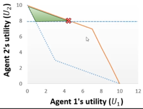
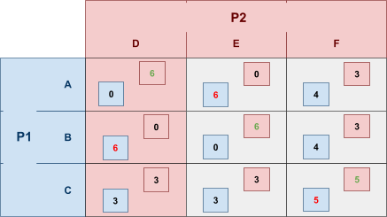
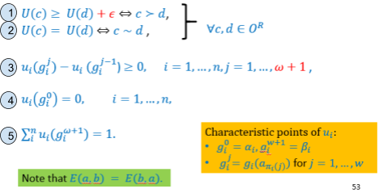

Intelligent Agents
Matthew Barnes
Overview 3
Introduction to Intelligent Agents 3
Agents 4
Intelligent Agents 5
Multi-Agent System (MAS) 6
Agent-Based Negotiation 8
Part 1 8
Ultimatum Game 11
Alternating Offers 11
Monotonic Concession Protocol 12
Divide and Choose 14
Part 2 14
Utility functions 15
Utility space 15
Fairness 19
Part 3 21
Basic negotiation strategies 21
Uncertainty about the opponent 23
Preference uncertainty 25
Utility Theory 25
Decision under certainty 26
Decision under uncertainty 28
Pure Strategy Games 32
Strategic-form Games 33
Strictly dominated strategies 34
Weakly dominated strategies 35
Pure Nash Equilibria 36
Mixed Strategy Games 39
Mixed Nash Equilibria 42
Computing Mixed Nash Equilibria 43
Best Response Method 43
Indifference Principle 45
Extensive-Form Games 48
Strategic-Form Transformation 51
Equilibria 53
Backward Induction 56
Linear Programming 59
Computing Nash Equilibrium with LP 59
Structure of linear programs 62
Transforming linear programs 63
Beyond linear programming 65
Preference Elicitation 65
Preference ordering 65
Preference uncertainty 66
Multi Criteria Ranking using Multi-Attribute Additive
Functions 67
Ordinal Regression via Linear Programming (UTA) 68
UTAGMS - Robust Ordinal Regression 73
Auctions 78
Types of auctions 80
Analysing Auctions 80
First-price auction expected utility 81
Vickrey Auction: Discrete bids expected utility 83
Vickrey Auction: Continuous bids expected utility 83
Strategy-proofness 84
Bayes-Nash Framework 85
Revenue Equivalence 86
Trading Agents 86
Voting 88
The Social Choice Problem 89
Plurality Vote 90
Copeland Method 91
Borda Count 91
Properties of voting procedures 92
Social Welfare Functions 93
Social Choice Functions 94
Overview
Introduction to Intelligent Agents
-
Five ongoing trends have marked the history of
computing:
-
Computing costs less
-
We can introduce processing power into places and devices
that would’ve otherwise been uneconomic
-
Edge computing: data is processed at the edge of the network (real-time
“instant data” generated by sensors or
users)
-
Computers are networked into distributed systems
-
They can talk to each other and help each other
-
Computers are smart (sort of)
-
They can complete really complex tasks, like making a move
in chess, or deciding if a picture has a cat in it or
not.
-
We are passing down more and more tasks to computers.
-
We’re giving control to them, even for
safety-critical tasks, such as aircrafts and self-driving
cars.
-
Computers are meant to augment human intelligence.
-
They’re meant to do stuff for us.
-
That means they need input from us, such as decision
preferences.
- So what?
-
Well, each of these trends imply that:
-
Computers need to act independently
-
Computers need to represent our best interest
-
Computers need to cooperate, reach agreements or even compete.
-
Together, they’ve led to the emergence of a new
field:
-
Wow! Lots of agents working together in a system!
-
... what’s an agent?
Agents
“A computer system capable of autonomous action in some
environment, in order to achieve its delegated
goals”
-
In layman’s terms, an agent is a computer system that lives in some kind of changing
environment, and it performs automatic actions to try and
achieve a goal defined by us: the human overlords.
-
The key points are:
-
Autonomy: capable of independent action without need for constant
intervention (can do stuff by itself)
-
Delegation: acts on behalf of its user or owner (represents our best interests)
-
We think of an agent as being in a close-coupled, continual
interaction with its environment:
-
sense → decide → act → sense → decide → ...
-
Perceives the environment through sensors (cameras, TCP/UDP socket, keyboard etc.)
-
Acts on the environment through actuators (variables, web pages, databases, robotic arms etc.)
-
Here’s a simple example of an agent: a
thermostat.
-
Delegated goal: maintain room temperature
-
Perception: heat sensor
-
Action: switch heat on / off if room temp. is too cold /
hot
-
Input: the heat threshold at which the heat should be turned on
at
A pretty plain-looking thermostat. It doesn’t even have
RGB.
-
This one’s a bit boring because the decision is easy:
it’s just checking the room temperature against a
given threshold.
-
How do we define an agent that’s a bit...
smarter?
Intelligent Agents
-
An intelligent agent has three behavioural properties:
-
The agent maintains an ongoing interaction with its
environment, and responds to change that occurs in it.
-
Basically, the agent needs to be able to respond to
change.
-
The agent needs to generate and attempt to achieve goals
and not be driven solely by reacting to events; it needs to
take the initiative.
-
In other words, the agent needs to actually do stuff by
itself to achieve its goals and not just react to things
that change.
-
This also includes recognising opportunities, and taking
them.
-
The agent needs the ability to interact with other agents
and (usually) humans via cooperation, coordination and negotiation.
-
Simply, the agent needs to be able to talk to other
agents.
-
There are other properties, such as:
-
Tries to maximise its performance measure with all possible
actions.
-
Agent improves performance over time
-
Intelligent Agent Challenges:
-
How to represent goals and user preferences
-
How to optimise the decision making
-
How to learn and adapt and improve over time
Multi-Agent System (MAS)
-
A multi-agent system (MAS) is one that consists of a number of agents, which
interact.
A multi-agent system of smol robots.
-
Generally, agents act on behalf of users.
-
They each have different goals and motivations with each
other.
-
Despite that, they all work together to achieve a common
goal, like humans (or not; depends on your group assignment)
-
There are some problems that arises with a MAS:
-
If it’s every-agent-for-themselves, how do they
cooperate?
-
How can conflicts be resolved, and how can they
(nevertheless) reach agreement?
-
How can autonomous agents coordinate their activities so as
to cooperatively achieve goals?
-
Agents owned by the same person / organisation
-
Can be controlled and made to coordinate
-
More robust than “centralised” system
-
No incentive needed, as all agents are controlled by the
same thing
-
Each agent works on behalf of someone else
-
Each agent is different
-
“Every agent for themselves”
-
Still need to cooperate, but needs mechanisms to resolve
conflicts
-
Link with other disciplines:
- Robotics
-
Complex Systems Science
- Economics
- Philosophy
- Game Theory
- Logic
-
Social Sciences
-
Infusing well-founded methodologies into the field
-
There are many different views as to what the field is
about
You could even teach a bunch of robot agents to play football
with each other.
-
Algorithms to solve hard decision problems; e.g.
planning
-
Algorithms to interpret complex data; e.g. Machine Learning
and Machine Vision (I know that’s not classical AI but whatever)
-
Knowledge representation and reasoning
-
Agents combine techniques:
-
Robotics: vision + planning
-
Software assistants: machine learning + scheduling
-
E-Commerce ‘bots’: search + machine learning
-
There are applications of agents:
-
As a paradigm for software engineering
-
As a tool for understanding human societies
Agent-Based Negotiation
Part 1
-
When agents work with each other, there can be
conflict.
-
Conflict is when there is a clash between agents’ different
preferences or aims.
-
This can happen with people, too:
-
Who’s going to do the washing up?
-
Where do we go out for dinner?
-
Conflicts happen in multi-agent systems when:
-
Agents are self-interested (maximise their own benefit)
-
Agents represent different stakeholders (different sets of interests / aims)
-
A buyer wants to pay as little as possible
-
The seller wants to sell as much as possible
-
This is a conflict; the buyer wants to reduce the price, and the seller wants
to increase it.
-
Conflict resolution is possible when there is a mutual benefit to reach an
agreement.
-
In other words, it’s better to reach an agreement
than to call the whole thing off.
-
There’s different types of conflict resolution:
- Auctions
- Voting
- Negotiation
-
These different types are suited for different
situations.
-
Auctions are used to allocate scarce resources or tasks, such
as:
-
Items to buyers
-
Advertising space to advertisers
-
Cloud computing
-
Tasks to robots
-
Stocks and shares
To enable auctioning within agents, you must
3D-print a small gavel for them to use.
-
Auctions are characterised by:
-
Clearly defined protocol (rules or mechanism) e.g. English auction, Dutch auction,
Vickrey auction
-
Typically requires trusted third party (e.g. auctioneer)
-
Involves continuous resource such as money
-
Exploits competition between agents (works well with lots of agents)
-
Voting is used for group based decisions, called social choices.
- Examples:
-
Where to go out to dinner
-
Where to build new bridge / services / housing
-
Which is the best JoJo part
Voting: a core component of a civilised society,
according to Lord of the Flies.
-
Voting is characterised by:
-
A single decision from a (typically finite) number of
options
-
Each agent can have different preferences for each option,
which is given by a preference order (a.k.a ordinal utility function)
-
Clearly defined protocol
-
Negotiation (a.k.a Bargaining) is governed by a protocol which defines the
“rules of encounter” between agents,
including:
-
Type of communication allowed
-
Type of proposals that are allowed
-
Who can make what proposal at what time
-
Basically, in a negotiation, different kinds of proposals
are made at certain times.
-
Usually, proposals are made until an agreement is reached
or the agents are too stubborn and quit.
-
The way it works depends on the kind of negotiation
protocol we’re using.
An illustration of a negotiation;
not to be confused with TCP/IP.
-
Negotiations are more flexible compared to other
approaches:
-
You can exchange offers / proposals, but you can also
exchange other information such as arguments (reasons why)
-
Allows for less structured protocols
-
Often bilateral (between two agents) but can also support multi-party negotiation (more than two agents)
-
Enables more complex types of agreements (e.g. multi-issue negotiation)
-
Often decentralised (can involve a mediator)
-
In case you haven’t noticed, this topic is called
Agent-Based Negotiation.
-
Therefore, we’ll focus on negotiation
protocols.
-
Negotiations are characterised by:
-
Single-issue negotiation (distributive bargaining): e.g. haggling prices. Competitive setting,
short-term
-
Multi-issue negotiation (integrative bargaining): include more issues, allows for mutual benefit and
cooperation, long-term
-
The preference over possible agreements.
-
Basically, how “picky” an agent is given an
offer.
-
Specified using utility functions.
-
Agent negotiation strategies
-
How the agent behaves.
-
Defined by the actions taken by the agent at each possible
decision point, given information available
-
Before we move on to the negotiation protocols, it’s
worth modelling a single-issue negotiation:
-
This graph represents a buyer/seller negotiation, and the
bottom axis represents the argued price.
-
The blue arrow is the range of prices the buyer is willing
to purchase at, and the orange arrow is the range of prices
the seller is willing to sell their product for.
-
The range of prices at which the buyer and seller arrows
intersect is called the agreement space.
-
That’s the range of prices that both agents are
willing to settle for.
-
The whole point of a negotiation is to scope out the
agreement space, but the agents also want to make offers
that maximise their aims, e.g. the buyer would want a deal
on the far left of the agreement space.
Ultimatum Game
-
Let’s say you have a cake and need to split it
between two agents.
-
In the Ultimatum Game:
-
Agent 1 suggests a division of the cake
-
Agent 2 can choose to accept or reject the cake
-
If agent 2 rejects, nobody gets the cake
-
This is also known at the take it or leave it game.
Agent 1 is not a very reasonable agent.
-
If agent 1 splits the cake in half, it seems fair.
-
But what if agent 1 leaves agent 2 with a small slither of
cake?
-
Either agent 2 has to accept the tiny slither, or get
nothing.
-
Does that seem fair?
-
This is called the first-mover advantage.
-
It means whoever makes the first offer has a significant
advantage in the negotiation.
-
The Ultimatum Game assumes that the agreement space is
already known between the agents (the seller’s reserve and buyer’s willingness
to pay are shared knowledge).
-
There’s also no ability to explore the negotiation
space, which isn’t so important in this example, but
is important when there’s multiple issues.
Alternating Offers
-
The alternating offers protocol consists of a number of rounds, in which offers
are exchanged in an alternating fashion.
-
Agent 1 starts off with an offer.
-
Agent 2 can accept or reject. If agent 2 rejects, agent 2 can make a
counter-offer.
-
Agent 1 can accept or reject the counter-offer. If agent 1 rejects, agent 1 can
make a counter-counter-offer.
-
This keeps on looping until an agreement is made.
-
The loop can also end after a deadline of a set number of rounds.
How can they negotiate how much cake to eat
if they don’t have hands to eat with?
-
The vendor suggests ¥1,000 for five kebabs.
-
Joseph makes a counter-offer of ¥250.
-
The vendor makes a counter-counter-offer for
¥700.
-
They converge with the offers ¥300, then ¥600, then
¥350, then ¥550, then ¥400, then ¥450, until
eventually they reach a consensus with ¥425.
-
This is better, but is there any reason for an agent to
concede (change their previous offer)?
-
The vendor could’ve just kept saying ¥1,000, no
matter what Joseph said, and created an Ultimatum Game
situation.
-
True, if the vendor kept prices high, Joseph could’ve
just walked away.
-
But in the context of agents, a rational agent will always
accept in an ultimatum game.
-
There needs to be some way to incentivise a
concession...
Monotonic Concession Protocol
-
In the Monotonic Concession Protocol, negotiations proceed in rounds as well, except agents
simultaneously propose offers at the same time (without seeing the other offer).
-
If an agent makes an offer that the other agent rates at
least as high as their own offer, an agreement can be made (if both offers are agreeable, one is picked at
random).
-
If not, another round begins.
-
In the next round, at least one of the agents needs to
concede (change their offer).
-
If neither agent concedes, the negotiation ends without a
deal.
-
What was that? You want an example? The slides are too
incompetent to provide a proper explanation?
|
Buyer
|
Seller
|
Description
|
|
£5
|
£30
|
The buyer wants to buy something, and the
seller is selling it at a haggled price.
The buyer makes an offer for £5, and the
seller makes an offer for £30. These are
shown simultaneously.
The buyer thinks their offer of £5 is way
better for them than the seller’s deal of
£30.
The seller thinks their offer of £30 is
way better for them than the buyer’s deal
of £5.
Therefore, another round begins.
|
|
£10
|
£20
|
Both agents concede and make new offers. The
prices converge.
The buyer still thinks their offer is better
off for them than the seller’s offer, and
vice versa.
Another round!
|
|
£10
🐐
|
£20
|
The seller does not concede and sticks with the
same offer they had before. They’re
certain that their product is worth £20 at
the least.
The buyer is still making an offer of
£10, but is also throwing in their best
goat into the deal.
The seller thinks. Yesterday, at the market,
the cheapest goat went for about £12. That
means the buyer is basically paying £22,
with the value of the goat included.
That’s even more than the seller is
offering!
Right now, the seller is rating the
buyer’s offer as greater than or equal to the rating of the seller’s own
offer. That means an agreement can be
made.
The seller walks away with £10 and a new
goat, and the buyer walks away with whatever it
was the seller was selling (use your imagination).
|
Divide and Choose
-
The Divide and Choose protocol is pretty self-explanatory:
-
Agent 1 divides a continuous resource into partitions.
-
Agent 2 chooses one of the splitted partitions.
-
So in the Ultimatum Game example, even if agent 1
partitioned a slither of cake for agent 2, agent 2 could
just pick the larger partition, leaving agent 1 with the
slither.

Mmmm, cake 🍰
-
Because the other agent is gonna pick the best slice, agent
1 would want to slice the cake equally, to maximise how much
they’ll get.
-
Therefore every agent will get an equal partition in divide
and choose.
-
This protocol only works for resource allocation problems, where some continuous resource needs to be divided
between multiple agents (like cake).
-
It also works for non-homogenous resources, like if parts
of the cake are more attractive (like the candy corn on top of that cake picture
above), or in the case of land division.
-
There’s equivalent protocols that handle more than 2
agents, but it gets complicated.
-
All in all, the desirable properties of a negotiation
are:
-
Individual rationality: A deal should be better than no deal for all agents
-
Pareto efficiency: There should be “no money” (or cake) left on
the table
-
The agreement should be “fair”
Part 2
-
In this part, we’re going to define these concepts
more formally.
-
So I hope you’re fluent in maths syntax.
Utility functions
-
First of all, we’ll define the utility function.
-
It is used to model an agent’s preference given an
offer.
-
In other words, this function tells us how much an agent
likes an offer.
-
The utility function is defined as:
-
where
 is the set of all possible offers
is the set of all possible offers
-
This function returns how much the agent likes that
offer.
-
There are two kinds of utility functions:
-
Ordinal preferences: a preference order is defined, but there is no numerical
utility
-
In other words, we can say and declare that is more preferable than , but that’s it.
-
Cardinal preferences: each outcome has a numerical utility value
-
For example, we could say that and
-
We can always infer ordinal preferences from cardinal
ones
-
A buyer and seller negotiate.
-
The set of possible outcomes are the price, denoted by
 , or a disagreement.
, or a disagreement.
-
The cardinal utility functions are given by:
-
 is the minimum price the seller is willing to sell
for (reserve)
is the minimum price the seller is willing to sell
for (reserve)
-
is the maximum price the buyer is willing to buy for (value)
-
Here, the buyer will prefer to pay less, and the seller
will prefer to pay more.
-
When goes up, will go up and will go down, and vice versa if goes down.
-
If the price goes below the minimum selling price or above the willing buying price , the seller / buyer will prefer a disagreement, as or will dip below zero.
Utility space
-
We can visualise this using a utility space.
-
A utility space is a graph that maps one utility function
on one axis, and another utility function on the
other.
-
It allows you to easily see the agreement space given a
negotiation.
-
If that makes no sense, don’t fear: here’s an
example.
-
Given the buyer / seller example above, let’s say and
 .
.
-
We can map the seller utility as the x axis and the buyer
utility as the y axis.
-
Then, we can plot points for all seller / buyer utility
values, for all values of .
-
This will form a line:
-
For every point on that line, there is a value of that, when plugged in to the utility functions of the
seller and buyer, results in the values of the x and y
coordinate (a.k.a the utility values of that point on the line).
-
For example, say we picked the point (1, 2) on the line.
That means there is a value of where the seller’s utility is 1, and the
buyer’s utility is 2 (spoilers: it’s 5).
-
What can we do with this graph?
-
Well, each agent will accept a deal if their utility value
is over zero (because if it’s under zero, they’d rather not
make a deal).
-
That means both agents will accept prices if both their
utility values are over zero.
-
We can find that range by looking at the graph:
-
Beyond the point (0,3), the price exceeds how much the
seller is willing to sell for.
-
Beyond the point (3,0), the price subceeds how much the
buyer is willing to buy for.
-
That means the line segment between those two points is the
sweet spot, or the “agreement space”, at which
both agents will be happy.
-
That also means any value of within that line segment will make those two agents
happy.
-
The agreement space is
-
We can’t negotiate forever.
-
We probably have better things to do than spending all
night arguing.
-
There’s different ways to model time pressure:
-
You must finish the negotiation after a set number of
rounds.
-
Imposed by the protocol (Ultimatum game can only be 1 round
long)
-
Can also be determined by individual constraints
-
There’s always a chance that the negotiation will end
in any round.
-
With monotonic concession, if agents don’t concede,
everything ends anyway.
-
Costs are applied to the utility functions that grow each
round.
-
Here’s two ways you can model bargaining costs:
-
Like the name says, a fixed cost is applied to the utility
function each round.
-
The cost grows linearly as rounds progress.
-
More formally, let
 denote the costs for agent
denote the costs for agent  , and
, and  is time or bargaining round, then the utility at time is given by:
is time or bargaining round, then the utility at time is given by:
-
After each round, the utility function is shrinked by
multiplying it by a number between 0 and 1.
-
An analogy for this is a melting ice cake; the longer you
wait, the more the cake shrinks.
-
More formally, let be the discount factor of agent , then the utility is given by:
Is it worth putting icing on an ice cake?
-
This all assumes that we have only one issue: one cake to
split, one price to negotiate over etc.
-
But what if we have many issues to take into account, like
time, quality of service, delivery time etc.?
-
In that case, we can make our offers into vectors, so it
would be for each issue
 .
.
-
We can use a weighted additive utility function to calculate a utility value given an offer vector:
-
That sum looks scary, but don’t worry; it’s
just a sum of the utility values of all the issues in the
offer vector, but some of them have weights applied to them,
so one issue could be more important than another to an
agent.
-
Let’s see an example.
-
Let’s say we have two cakes: one strawberry and one,
uh... chilli flavoured.
I just wanted to be different.
-
These two cakes represent our two
“issues”.
-
Offer represents the share that agent 1 receives for cake .
-
This means agent 2 will get .
-
Agent 1 prefers the strawberry cake, and agent 2 prefers
the chilli cake.
-
The weights will be 7 for a preferred cake and 3 for the
other cake.
-
This results in the utility functions:
-
What are we waiting for? Let’s see the utility space
for this!
-
The slides and online lecture go into a bit more detail,
but basically:
-
Point (7,7) is when both agents get all of their preferred
cake
-
Point (5,5) is when both agents get half of both
cakes
-
Point (3,3) is when both agents get all of their
non-preferred cake
-
Point (10,0) is when agent 1 gets both cakes
-
Point (0,10) is when agent 2 gets both cakes
-
Within this kite shape are all the possible agreements for
this negotiation.
-
It’s kind of clear that point (7,7) sounds like the
best offer, but hear me out: there’s more to it.
-
Did you notice that the top right half of the kite
perimeter is blue?
-
All the offers within that blue segment are all Pareto efficient.
-
That means that there’s no further improvement to
that offer without making one of the other agents worse
off.
-
The Pareto efficient frontier is the set of all Pareto efficient agreements; in
other words, the blue segment.
-
Basically, there’s no reason not to accept on a
Pareto efficient offer.
-
If you have an offer that is not Pareto efficient, there
must be some way to make that offer better for
everyone.
-
There’s even more properties we desire from an
offer.
-
Here’s three of the main ones:
-
Should be individually rational ( > )
-
Should be Pareto efficient
-
Should be fair
-
Wait, “fair”?
- What does fair mean?
Fairness
-
Fairness is an extra condition for an agreement that makes it more
desirable than the others.
-
Here’s four of them:
-
Utilitarian social welfare: maximise the sum of utilities
-
Pick the offer that maximises the sum of all the utility
values.
- Formally:
-
Egalitarian social welfare: maximise the minimum utility
-
Pick the offer that maximises the smallest of the utility
values.
- Formally:
-
Nash bargaining solution: maximise the product of the utility of the agents (minus
the disagreement payoff)
-
Pick the offer that maximises the product of the utility
values.
- Formally:
-
This one is especially cool because if an offer satisfies
the Nash bargaining solution, it has these properties:
-
Individual rationality: it’s gonna be better than doing nothing
-
Pareto efficiency: we’ve just covered that above
-
Invariance to equivalent utility representations: it’s immune to stuff like multiplying the entire
utility function by a constant (cool because ranges of some utility functions may be
different)
-
Independence of irrelevant alternatives (IIA): if you remove all non-optimal agreements and recalculate
the Nash bargaining solution, you’ll end up with the
same offer again; it won’t change
-
Symmetry (SYM): if the agents have the same preferences or are
“symmetric”, then the solution gives them the
same utilities (the kite example above is symmetric along x=y)
-
Envy-freeness: no agent prefers the resources allocated to other
agents
-
An agent is envious of the other agent if it would prefer
the allocation received by that agent.
-
A solution is envy free if no agent prefers the allocation of another agent.
-
This only makes sense in the case of resource allocation
problems.
-
Following the example above, let’s say agent 1 got
chilli cake and agent 2 got strawberry cake.
-
Let’s see their preferences if we reverse all the
allocations and give them their preferred cakes:
-
We can see that is greater than and vice versa for agent 2, therefore both agents are
envious of each other (they both desire what the other has).
Part 3
Basic negotiation strategies
-
There’s two kinds of negotiation strategies:
-
This is pretty much all the stuff we learned above.
-
To use a game theoretic strategy, you need to know the
rules of the game.
-
Preferences & beliefs of all the players needs to be
common knowledge.
-
It’s assumed that all players are rational
-
Preferences are encoded into a set of types
-
Closed systems, predetermined interaction, small sized
games
-
No common knowledge about preferences
-
Players don’t have to be rational
-
Agent behaviour is modeled directly
-
Suitable for open, dynamic environments
-
Space of possibilities is very large
-
Basically, we have no idea what’s going to happen,
but we use heuristics to make educated guesses.
-
We’ve had a look at game theoretic strategies
already.
-
So let’s have a look at heuristic strategies.
-
Heuristic strategies are split into two parts:
-
What target utility should I aim for at a particular point
in the negotiation?
-
So given a point in the negotiation, the concession
strategy is in charge of deciding what minimum target
utility value we should strive for in our offers.
-
Basically, it determines how picky we are with offers at a
given moment.
-
Multi-Issue offer producing strategy
-
Once a target utility is established, what offers should I
produce to achieve an agreement where my utility satisfies
the target utility?
-
We also make sure to satisfy Pareto efficiency.
-
This is trivial in the case of single issues.
-
There are two well-known concession strategies:
-
With time dependent tactics, we have a maximum and a
minimum utility value, Umax and Umin.
-
We start off by aiming for the maximum, and we gradually
move our target down to the minimum over time.
-
Formally, we define it like this:
-
Where F(t) is a function that takes in the time and returns
a value between 0 and 1.
-
It gives the fraction of the distance between the best and
the worst offer.
-
So for example, if F(t) = 0, we get Utarget(t) = Umax.
-
If F(t) = 1, we get Umin.
-
This function is defined as follows:
-
β → 0 - Hard-headed
-
No concessions; stick to the initial offer throughout (hope the opponent will concede)
-
β = 1 - Linear time-dependent concession
-
Linearly approach minimum utility
-
β < 1 - Boulware
-
Initial offer is maintained until just before
deadline
-
β > 1 - Conceder
-
Concedes to minimum utility very quickly
-
The agent detects the concession the opponent makes during
the previous negotiation round, in terms of increase in its
own utility function.
-
The drop in utility value of the offer the agent will
concede to in the next round is equal to (or less than) the
concession made by the opponent in the previous round:
-
If that made no sense, let me show you an example.
-
Your utility function is U(o) where o is an offer.
-
You make an offer to your opponent, o1, where U(o1) = 0.8.
-
Let’s say your opponent makes a counter-offer o2, and U(o2) = 0.5.
-
The next round, your opponent offers you a slightly better
offer, o3, and U(o3) = 0.6.
-
So we like o3 slightly more than o2; by 0.1, to be exact.
-
That means, for our next offer, we can reduce the utility
value for our initial offer by any value that is equal to or
less than 0.1.
-
For example, our next offer could be o4 where U(o4) = U(o1) - 0.1 = 0.7.
-
Or it could be less: U(o4) = U(o1) - 0.05 = 0.75.
-
Basically, the rate at which our offers go down in our
utility is the same / similar rate to which the
opponent’s offers go up in our utility.
Uncertainty about the opponent
-
Imagine if you knew everything.
-
What would you do with that information?
-
One of the things you could do is give optimal concessions
at any point in a negotiation.
If you really did know everything,
you probably wouldn’t be reading these notes.
-
But the reality is that we don’t know
everything.
-
We don’t know exactly what our opponent likes and
what they’re going to do.
-
However, we can create models of our opponent and guess what they’re like
based on what they’ve done so far.
-
So now we have a target utility from the concession
strategies, and we have a model of the opponent.
-
From those two, how do we create the best offers
that’ll maximise our chance of getting an agreement we
like?
-
We use an offer-producing strategy!
-
First, we create a graph of the agreement space:
-
Keep in mind that our opponent in this graph, agent 1, is
just a model. An estimation.
-
Now let’s say our target utility is 8:

-
We want any offer in that shaded green region, because
their utility values are all above / equal to 8.
-
However, it would be best to make the offer where the red X is.
-
That’s because it’s the offer that:
-
Satisfies our target utility
-
Is Pareto efficient
-
Maximises the opponent’s utility too, so
they’re more likely to agree with it
-
When the opponent utility is not known, this is called private information.
-
We can guess the opponent’s utility function by
looking at their behaviour.
-
For example, opponents are likely to concede on their least
preferred issues first, so you can guess the weight of that
issue.
Preference uncertainty
-
Sometimes we might not even know our own utility
function.
-
“Huh? But I’m me! Of course I know my own
utility function!”
-
But have a think about where the utility function actually
comes from.
-
The utility function is just a mathematical model of your best interests, used by an agent.
-
The agent has to ask you a bunch of questions to optimise
its utility function, but it’ll never perfectly map
out your interests exactly.
-
This process is called preference elicitation.
-
Asking you questions is called cognitive costs.
-
If there’s a lot of possible outcomes, there’s
a lot of questions the agent has to ask.
-
The agent wants to ask you lots of questions to get the
best utility function that represents you, but it
doesn’t want to bombard you with so many questions
that it’ll take you the rest of your life just to
answer them all.
-
So there’s a trade-off between cognitive costs and
maximising the utility.
-
There’s also some recent work that looks at
negotiation with incomplete information about our own
utility, called preference uncertainty.
-
We’ll go into more detail about preference
uncertainty later.
Utility Theory
-
A game is a mathematical model of interactive decision
making.
-
Basically, agents go head-to-head and interact to try and
achieve the best possible outcome.
-
There are different kinds of best outcomes, like winning,
maximising payoff, etc.
An example of a game. Although the kind of
games we’re reasoning with are a bit simpler.
-
The kind of game we’ll be talking about will go like
this:
-
An agent picks from one of a few finite decisions called choices.
-
When a choice is made, an outcome is reached (a.k.a result of their decision).
-
The outcomes could be anything:
-
Possible outcomes in a game of chess
-
Possible outcomes of negotiations between nations
-
Possible outcomes of an eBay auction
-
Let’s formalise some of this...
-
Let denote the choices available to an agent.
-
Let denote the outcomes.
-
Let denote the outcome function, which maps each choice to an outcome.
-
Alright, so in our formalised maths world, we can pick a
choice and get an outcome.
-
But how do we know which choice will give us the best
outcome?
-
To start off, we can model a preference between two outcomes.
-
In other words, given a pair of outcomes , we can say which one we prefer.
-
There’s actually two ways we can model
preference:
-
We know exactly what the consequences of our choices will
be
-
For every choice, there is exactly one known certain
consequence
-
We don’t know exactly what the consequences will
be
-
For every choice, there are multiple possible consequences,
each with an attached probability
-
For now, we’ll focus on under certainty, because
it’s the easier one.
Decision under certainty
-
A preference is a binary relation on .
-
So we can say if our agent prefers
 at least as much as .
at least as much as .
-
We assume that it’s:
-
We prefer an outcome as much as itself.
-
for all
-
We have to either prefer one outcome or the other.
-
For all , either or
-
(either or has to be true)
-
If we prefer the second outcome over the first one, and the
third outcome over the second one, then we’ll
definitely prefer the third outcome over the first
one.
-
For all , if and, then
-
When it satisfies all these properties, mathematics calls
that a total preorder.
-
If and , then we are indifferent between the two.
-
That means we don’t care which one we pick.
-
We denote that with .
-
If but not , then we strictly prefer over .
-
That means we definitely prefer over .
-
We denote that with .
-
This outcome function is an ordinal preference.
-
We can also define something with cardinal preference.
-
We can define a utility function, which maps an outcome to a numerical utility value.

-
A utility function
 over
over  is said to represent a preference relation iff, for all :
is said to represent a preference relation iff, for all :
iff
-
What does that mean?
-
With a preference relation, you can check if you prefer one
outcome over another.
-
You can also do that with a utility function, by checking
if the output of an outcome is greater than another.
-
So if you have a utility function that prefers all the same
outcomes as a preference relation, you can say that utility
function “represents” that preference
relation.
-
Given a finite set , for every preference relation on there exists a utility function that represents it (basically, there’s always a utility function for
every preference relation).
-
Keep in mind that agents do not choose outcomes based on
the numerical value of the utility function; they choose it
via their preference.
-
It doesn’t matter what the value is; the range could
be between 1 to 10, or 1 to a billion.
-
We’re only using numerical values for adopting
techniques for mathematical models, but keep in mind that
only the relative order of the values is important.
-
Because the ranges of utility values aren’t defined,
utilities of different agents cannot be compared.
-
Also remember that utility values are NOT money!
-
The difference is that with money, the value matters.
-
You’d say that going from £1 to £1,000 is
way better than going from £1 to £10,
right?
-
But if they were utility values, they’d both be
equally as enticing, because it only matters that one number
is bigger than the other.
Utility values are not legal tender and cannot be used in
shops.
-
We can formally represent decision-making as a tuple:
-
 and are the set of choices and consequences
and are the set of choices and consequences
-
is an outcome function that specifies the
consequences of each choice
-
is the agent’s preference relation
-
is the utility function representing
-
A rational decision maker is one that makes the best
possible choice.
-
That means the agent makes the choice that maximises their
utility:
where
-
Don’t worry so much about the syntax; it just means
we’re picking the choice that best maximises our
utility function.
-
Because we’re using numerical utilities, we can
express this decision problem as an optimisation
problem.
Decision under uncertainty
-
When there is uncertainty, we don’t know what outcome
will come from a choice.
-
When we make a choice, there are many possible outcomes,
each with a probability of occurring.
-
Therefore a simple preference relation over two outcomes is
not enough.
-
We need more!
-
To represent the uncertainty of an outcome, we use a probability distribution.
-
A probability distribution over a non-empty set of outcomes is a function:
-
So what does this mean?
-
It means that every outcome has a probability between 0 to
1.
-
If you add up all the probabilities of each outcome,
it’ll sum up to 1 (naturally).
-
This whole concept is called a lottery.
-
Lotteries are denoted by
 .
.
-
For example, let’s say you sent a kid over to buy ice
cream.
-
You tell the kid they can pick whatever flavour they
like.
-
The probability distribution over what flavour they pick
might look like:
-
As a lottery, this can be written as:
Mmmm, ice cream 🍨
-
When you think about it, a lottery is a generalised
outcome.
-
If is the outcome of a choice
 , this is the same as a lottery where and, for all such that , (basically has a chance of 1 and all other outcomes have a
chance of 0).
, this is the same as a lottery where and, for all such that , (basically has a chance of 1 and all other outcomes have a
chance of 0).
-
That lottery would be or just .
-
A lottery like that is called a degenerate lottery.
-
In the same way we can define a preference relation over a set of outcomes ...
-
... we can define a preference relation over a set of lotteries .
-
So say we could pick from between lottery L1 or lottery L2.
-
If we preferred L1 over L2, we could arbitrarily define .
-
We can also do the same with a utility function.
-
A compound lottery is a lottery of lotteries.
-
Given a set of lotteries , a compound lottery is a probability distribution
 over and is given by:
over and is given by:
-
You want another example involving ice cream?
Alright!
-
Let’s say you send the kid to get some ice cream
again.
-
The kid has no money. You’re 70% sure it’s
£1 a scoop, but you’re not totally sure.
-
You give the kid £1 anyway and send them to the ice
cream van.
-
If a scoop is £1, the ice cream lottery takes effect:
-
If the scoop is more than £1, the kid can’t get
anything, so this degenerate lottery takes effect:
-
As a whole, this is all one big compound lottery:
-
There’s another example about weather in the slides,
but I wanted to expand on the previous example, and I also
like ice cream.
-
The expected utility (EU) of a lottery is the average utility we can expect from that
lottery.
-
It can be calculated like this:
-
is the set of outcomes
-
is the utility function
-
is the lottery
-
is the probability distribution of the lottery
-
What’s that? You want another example involving ice cream? Sure!
-
Let’s define a utility for each ice cream
flavour:
-
Yeah yeah, you can argue about it in the Google docs
comments.
-
Just a reminder, the probability distribution of the
flavours go like this:
-
So we can calculate the EU of lottery L like so:
-
 ++
++
-
To simplify this, EU(L) = 2.1.
-
That’s great, but who cares?
-
Now, I know what you’re thinking.
-
“What’s the relation between preferences over
lotteries and expected utility?”
-
What? You weren’t thinking that?
-
Well, von Neumann and Morgenstern were definitely thinking
that.
-
A preference relation over outcomes is ordinal, and utility functions are cardinal.
-
A preference relation over lotteries is ordinal, and expected utilities are cardinal.
-
So you could try to think of things like this:
|
|
Outcomes
|
Lotteries
|
|
Ordinal
|
Preference relation over outcomes
|
Preference relation over lotteries
|
|
Cardinal
|
Utility functions
|
Expected utilities
|
-
Utility functions can “represent” a preference
relation over outcomes.
-
So can an expected utility “represent” a
preference relation over lotteries?
-
Not exactly... there’s slightly more to it.
-
A preference relation over lotteries is arbitrary and
vague.
-
We can just say if we prefer L1 to L2 and call it a day.
-
However, expected utilities (EUs) are calculated. It’s an actual value we can derive (as opposed to utility functions, where the value
doesn’t matter).
-
Therefore these two aren’t really the same things in
the same way that utility functions can
“represent” a preference relation over
outcomes.
-
Now don’t worry, von Neumann and Morgensten already
found a relation between preference relations and expected
utilities.
-
But we must define two axioms that preferences can satisfy
first:
-
Don’t worry so much if these don’t make sense.
It’s only important that you know they exist.
-
The von Neumann - Morgenstern theorem goes like this:
-
Let be the set of compound lotteries over a finite set and let be a preference relation over . Then, the following are equivalent:
-
satisfies continuity and independence.
-
There exists a utility function over such that for all :
-
English please?
-
You can look at this in two ways:
-
If satisfies continuity and independence, then that means when
-
If when , then satisfies continuity and independence
-
If that still doesn’t make sense, don’t worry;
just know that there is a connection between preference
relations over lotteries and expected utilities.
Pure Strategy Games
-
Now, we’re going to be talking about strategic-form
non-cooperative games.
-
Strategic-form non-cooperative games are games where:
-
Each player has different choices called strategies.
-
Players act alone, do not make joint decisions, and pursue
their own goals.
-
Players simultaneously choose a strategy, and these
combined strategies result in one of many outcomes.
-
Each player has their own preference over these
outcomes.
-
You are drugged one day, and you wake up in a
warehouse.
-
You are wearing an electronic bracelet with the number
“3” displayed on it.
-
If you can get the number to 9 or above, it comes off and you can escape.
-
If the number gets to 0 or below, you are killed.
-
To change the number on your bracelet, you need to play the
AB game with others in the same situation as you.
-
When you play the AB game with someone, you both make two
choices each, independently:
-
If you both pick “ally”, you both get 2
points.
-
If you pick “betray” and the other picks
“ally”, you get 3 points and the other loses 2
points (and vice versa).
-
If you both pick “betray”, nobody gets any
points.
-
Here, there are four possible outcomes for each
player:
-
We can define a preference relation for each player such that:

-
It’s all like plus and minus and arghhh it’s
confusing 🥴
-
It’d be easier if we assigned utility values to each
outcome, so we can look and go “bigger number means
better”
Strategic-form Games
-
Before we go on further, let’s formally define
strategic form games a bit more.
-
A strategic-form game is a tuple:
-
is a finite set of players
-
is a finite set of strategies for each player
-
is a utility function for player (
 is the set of reals)
is the set of reals)
-
A strategy profile or strategy combination is a tuple:
-
It’s basically one of the possible combinations that
players can pick their strategies.
-
They can also be denoted by:
-
... to highlight the strategy of player .
-
denotes the strategy combination without player :
-
is the set of all strategy combinations of the form excluding the player .
-
This syntax seems weird, but it’s just so we can
focus on player .
-
Throughout this section, we assume that all players know
each other’s strategies and utilities.
-
We also assume we’re all rational
decision-makers.
-
A rational decision-maker is one that always chooses the option that maximises their
utility.
-
With this in mind, how do we predict the outcome of these
games?
-
We can define solution concepts, i.e. criteria that will
allow us to predict solutions of a game under the
assumptions we make about the players’
behaviour.
Strictly dominated strategies
-
So what sort of options will a player choose?
-
What if one of the choices always yielded worse results, no
matter what happened?
-
You’d never pick that choice, right?
-
Therefore, we can rule out that choice.
-
That’s the main concept of strictly dominated
strategies.
-
A strategy of player is strictly dominated if there exists another strategy of player such that for each strategy vector
 of the other players,
of the other players,
-
In this case, we can say that is strictly dominated by .
-
What this basically says is that if you pick strategy over , then no matter what the opponent picks, you’re
gonna be missing out on some extra utility you
could’ve gotten had you picked .
-
Because we’re assuming that players are rational,
they’ll never pick strictly dominated strategies, so
we can rule them out.
-
Let’s have a quick example:
-
Take a look at your “betray” strategy.
-
If you pick “betray” and they pick
“ally”, you get an extra +2 utility that you
wouldn’t have gotten had you picked
“ally”.
-
If you pick “betray” and they pick
“betray”, you get an extra +5 utility that you
wouldn’t have gotten had you picked
“ally”.
-
So no matter what, when you pick “betray”,
you’re getting more utility than
“ally”.
-
This means “ally” is strictly dominated by
“betray”.
-
Therefore we can eliminate the “ally”
strategy.
-
This is called iterated elimination of strictly dominated strategies.
-
We can eliminate these strategies in any order; it
doesn’t matter.
-
So, according to this model, there’s really no reason
to pick “ally”.
-
Although, I don’t think you’d have many friends
if you followed models like these.
Weakly dominated strategies
-
Sometimes, there are no strictly dominated
strategies.
-
What do we do then?
-
We can eliminate strategies where you either:
-
Miss out on utility had you picked another strategy
-
The utility you get is no different had you picked the
other strategy
-
That’s the main concept of a weakly dominated
strategy.
-
A strategy of player is weakly dominated if there exists another strategy of player such that:
-
For every strategy vector of the other players,
-
There exists a strategy vector of the other players such that,
-
In this case, we can say that is weakly dominated by .
-
What this basically says is that is at least as good as strategy .
-
When you pick over , depending on what the opponent picks, it will either not
make any difference between picking or , or you’ll get more utility by picking over .
-
However, for it to be weakly dominated, there needs to be
at least one strategy profile where picking over yields you more utility (so indifferent strategies can’t weakly dominate each
other).
-
Let’s give another example:
-
Take a look at your “B” strategy.
-
If you pick “B” and they pick “C”,
you’d get an extra +1 utility by picking
“B” instead of “A”.
-
If you pick “B” and they pick “D”,
it would’ve made no difference had you picked
“B” or “A”.
-
This makes “A” weakly dominated by
“B”.
-
We can eliminate weakly dominated strategies, and that’s
called iterated elimination of weakly dominated strategies.
-
But there’s two things to remember:
-
The order of elimination matters; you could end up with
different results!
-
You may eliminate some Nash equilibria from the game (more on this later).
Pure Nash Equilibria
-
Sometimes, there are no strongly / weakly dominated
strategies to eliminate.
-
We can use a different concept, though.
-
The concept of stability: Nash Equilibrium!
-
But first, we need to define the concept of a “best
response”.
-
Like the name suggests, a best response is the optimal strategy a player can take that maximises
their utility, when used in response to the other player’s
strategy.
-
Formally, let be a strategy vector for all the players not
including . Player ’s strategy is called a best response to if:
-
-
Take this example: let’s say you’re player 1,
and player 2 just picked D.
-
What would be your best response?
-
If you look at the possible
strategies:
-
Picking A would give you a utility of 0.
-
Picking B would give you a utility of 6.
-
Picking C would give you a utility of 3.
-
So picking B would be the best response to P2’s
choice of D, because it’ll yield you the highest
utility.
-
So now we know what a ‘best response’ is,
what’s a Nash equilibrium?
-
A Nash equilibrium is a situation of stability in which both responses
are best responses to each other.
-
Formally, a strategy combination is a Nash equilibrium if is a best response to for every player .
-
To illustrate this, I’m going to show the table
again, but each green number is P2’s best response to P1, and each red number is P1’s best response to P2.

-
We can see that (C,F) are the best responses to each
other!
-
Therefore, (C,F) is a Nash equilibrium.
-
This means if P1 picks C and P2 picks F, that means none of
them will benefit from changing their choice, because
they’ve already picked the best responses to each
other.
-
How do we find these Nash equilibria?
-
There’s two main ways: best response intersection,
and iterated elimination.
-
Let’s try the first for now: we find the best
responses of both players, and we find the
intersection.
-
Here’s the best responses for both players:
-
For player 1:
-
For player 2:
-
Now, we find the intersection of these two sets, and we
have our Nash equilibria.
-
is shared between the two, so that’s our Nash
equilibrium for this example.
-
It is possible that there might be multiple Nash
equilibria.
-
A game with multiple Nash equilibria are called Coordination games.
-
Equilibria arise when players coordinate on the same
strategy.
-
In addition, some games might not have any Nash equilibria,
like the matching pennies game.
-
Now, we’ll go over that other strategy for finding
Nash equilibria: iterated elimination.
-
If you perform iterated elimination of strictly dominated
strategies and end up with one strategy profile to pick
from, then that profile is a Nash equilibrium (and the only one in that game).
-
Eliminating strictly dominated strategies does not eliminate equilibria...
-
... but eliminating weakly dominated strategies might.
-
To put it more formally, given a game G, let G* be the game
obtained by iterated elimination of weakly dominated
strategies.
-
The set of equilibria of G* is a subset of the set of
equilibria of G.
-
If you eliminate weakly dominated strategies, you may
eliminate none, some, or all of the Nash equilibria in the
game.
-
Here’s an example:
-
The equilibria are and .
-
In this example, we can eliminate L for being weak to R,
and then eliminate B for being weak to T.
-
But... oops! We’ve eliminated the B row and L column.
That means the Nash equilibrium is no longer present.
-
So remember, be careful with elimination. If you’re
looking for Nash equilibria, it’s good to eliminate
strictly dominated strategies, and then calculate the best
responses for each player and then intersect.
Mixed Strategy Games
-
Before, in our pure strategic-form games, players could only pick one strategy
and that’s it.
-
But what if we added a probability to each strategy?
-
What if you had, say, a 50% chance of picking one strategy
and 50% chance of picking another one?
-
That is the core concept of mixed strategy games!
-
More formally, in a strategic-form game, a mixed strategy for player is a probability distribution over the set of
strategies , i.e. a function such that
-
In other words, each strategy has a probability , which is the probability that player will play it. All strategy probabilities a player has
must add up to 1 (naturally).
-
From now on, we’ll call these mixed strategies, and
everything we had before we’ll call pure strategies.
-
Now, if you adopt a mixed strategy, you’ll be less
predictable and keep your opponents guessing.
-
But when we had pure strategies, we could calculate Nash
equilibria and stuff. How do we do that here? We’ll
get on to that in a moment!
-
First, we need to introduce expected utility.
-
The expected utility of a mixed strategy is how much estimated utility you
would get on average if you played that strategy.
-
It’s calculated using a weighted sum of pure
utilities and probabilities.
-
Here’s an example using Matching Pennies:
-
Let’s suppose that you play heads with probability of
0.4, meaning:

-
(because there’s only two options and 1 - 0.4 =
0.6)
-
... and our opponent plays heads with probability of
0.3:
-
What is our expected utility?
-
We need to do a weighted sum of every possibility that
could happen in this game.
-
A weighted sum of probabilities and utilities.
- Like this:
-
 You pick heads and they pick heads
You pick heads and they pick heads
-
You pick heads and they pick tails
-
You pick tails and they pick heads
-
You pick tails and they pick tails
-
The expected utility for player 2 is calculated in a
similar way.
-
Now to put all of this into maths syntax:
-
In a strategic-form game, for each player , let be the set of all mixed strategies over , i.e.
-
Let
-
We call every element a mixed strategy profile or mixed strategy combination.
-
In other words,
 contains every possible probabilistic strategy that
each player could adopt in the game.
contains every possible probabilistic strategy that
each player could adopt in the game.
-
Like in pure strategies, we use to represent the strategies of everyone except player .
-
Given a mixed strategy profile , the expected utility of player is given by:

-
Let be a strategic-form game. The mixed extension of G is the game
- Where:
-
Each is the set of mixed strategies of player over
-
Each (set of reals) is a payoff function that associates with each mixed
strategy combination its expected utility (in other words, ).
-
Oof, that’s a lot of syntax...
-
That’s alright, though. As long as you understand the
core concepts.
I wonder what the mixed Nash equilibrium of poker is?
(more on mixed Nash equilibrium later!)
-
Wait, what’s a mixed extension? We mentioned that
above.
-
A mixed extension is a “new” game built on top of a
strategic-form game with only pure strategies.
-
When you think about it, mixed games are actually just
generalisations of pure games.
-
Pure games are just special forms of mixed games: in pure
games, there’s one strategy for each player with
probability of 1, and every other strategy is 0.
-
So if we have a pure game, we can actually treat it like a
mixed game, with probabilities of 0 and 1. That’s what
a ‘mixed extension’ means.
Mixed Nash Equilibria
-
To introduce the concept of Nash equilibria to mixed games,
we need to define the concept of best response to mixed
games first.
-
Let be a strategic-form game and let be its mixed extension. Let be a mixed strategy vector for all the players not
including . Player ’s mixed strategy is called a best response to if
-
In other words, it’s a best response if there’s
no other mixed strategy we can pick that’ll increase
our expected utility.
-
It’s the same as the best response in pure games,
except it’s about expected utility and mixed
strategies, and not normal utility and pure
strategies.
-
Now, defining a mixed Nash equilibrium is easy.
-
A mixed strategy combination is a mixed strategy Nash equilibrium if is a best response to for every player .
-
Like in pure games, a mixed strategy Nash equilibrium is
where both responses are best responses to each other (but this time, it’s mixed).
-
We’ll use the term “mixed Nash equilibrium” to refer to this, and “pure Nash
equilibrium” to refer to the Nash equilibrium defined
in “Pure Strategy Games”.
-
Naturally, since pure games are special kinds of mixed
games, pure Nash equilibria are special kinds of mixed Nash
equilibria.
-
In our matching pennies game, there is a unique mixed Nash
equilibrium, and that’s to pick heads 50% of the time,
and tails the other times, for both players:
Hype for competitive Matching Pennies at the next
Olympics
-
In pure games, pure Nash equilibria do not always exist.
Sometimes there are none.
-
However, in a mixed game, there is always mixed strategy
Nash equilibria.
-
It’s pretty hard to find them, though. It’s PPAD-complete (Daskalakis, Goldberg, Papadimitriou, 2009)!
-
It’s not so hard to find them in 2x2 games, though.
That’s what we’ll focus on.
Computing Mixed Nash Equilibria
-
First, let’s define a generic 2x2 mixed game.
-
The probabilities of player 1 (P1) are:
-
Picking T:

-
Picking B:
-
The probabilities of player 2 (P2) are:
-
Picking L:

-
Picking R:
-
Both and are in the range
 , as a probability normally would.
, as a probability normally would.
Best Response Method
-
This is the first method of finding Nash equilibria.
-
What we do is we construct functions for each
player’s best response:
-
The intersection between these functions will give us our
mixed Nash equilibria.
-
Let’s walk through an example while I explain:

-
Here, we have 2 pure Nash equilibria and , but also a mixed Nash equilibrium that we want to
find.
-
Let’s start with player 1.
-
Player 1’s best response is:
-
What does “argmax” mean?
-
It stands for “arguments of the maxima”, and it means its selecting a value of that maximises , and returning that instead.
-
So you can think of as the “best value of that maximises our expected utility”.
-
So how do we get the best values of ?
-
First, let’s simplify using our equation and go from there:
-
So, it seems that our best value of (the value of that maximises our expected utility) depends on the value of .
-
Have a closer look at our equation. is the coefficient of the only term.
-
If is negative, then as we increase , our expected utility will get smaller. So, we would need
to pick the smallest we can, which is 0.
-
If is positive, then as we increase , our expected utility will get bigger. So, we would need
to pick the biggest we can, which is 1.
-
If is zero, then no matter what value of we pick, our expected utility stays the same (because is getting cancelled out). Therefore we can pick any value of , even 0 and 1. In other words, the range [0,1] (between 0 and 1, and including them;
‘inclusive’).
-
So now our best values of looks like this:
-
You know, we can rearrange that coefficient to isolate :
-
That’s it! We’ve got the best values of .
-
Now we need to find the best values of .
-
This is more-or-less the same as finding the best values of , so I’ll skim it a bit.
-
Yatta! We’ve got the best values of and now.
-
There’s one step now: plotting the best results and
finding intersections.
-
As you can see, there are three intersections, representing
the three Nash equilibria:
-
The pure Nash equilibrium for
-
The pure Nash equilibrium for
-
The mixed Nash equilibrium for , or
Indifference Principle
-
This method is a bit more numerical.
-
It’s based off the indifference principle, which goes like this:
-
Let be a mixed Nash equilibrium of a strategic-form game,
and let and
 be two pure strategies of player . If
be two pure strategies of player . If
-
In other words, if you have a mixed Nash equilibrium and
multiple pure strategies have probabilities greater than 0,
then each of those pure strategies have the same
payoff.
-
They are indifferent to playing a pure strategy over
another.
-
We call a mixed strategy of player a completely mixed strategy (or fully mixed) if
-
... for every pure strategy .
-
In other words, a completely mixed strategy is where every
pure strategy has some probability higher than 0.
-
We call a mixed Nash equilibrium a completely mixed Nash equilibrium (or fully mixed) if for every player , the strategy is completely mixed.
-
So if our mixed Nash equilibrium contains all fully mixed
strategies, we call it a completely mixed Nash equilibrium:
a special kind of mixed Nash equilibrium. Pretty simple,
right?
-
Let’s refer back to our generalised 2x2 game
again.
-
As usual, is the probability P1 will pick T, and is the probability P2 will pick L.
-
Let’s define some helper functions:
-
is the expected utility for P1 when choosing T,
-
is the expected utility for P1 when choosing B, and
so on.
-
Now, here is how our indifference principle method
works:
-
A pair of probability distributions
 is a completely mixed Nash equilibrium in the generic
2x2 game if and only if
is a completely mixed Nash equilibrium in the generic
2x2 game if and only if
-
This is just an application of the indifference principle
on our generalised 2x2 game.
-
The expected utility for P1 when choosing T is the same as
the expected utility for P1 when choosing B, and so on for
P2.
-
There is a proof for this, but it’s not
examinable.
-
We first check the first equality and find solutions for .
-
We then check the second equality and find solutions for .
-
Lastly, all pairs of solutions are fully mixed Nash equilibrium.
-
Because this is a game with only 2 strategies for each
player, all fully mixed Nash equilibria are also just normal
mixed Nash equilibria. If we had more strategies for each
player, that wouldn’t be true.
-
One difference between best response method and
indifference principle method: the best response method can
find both pure and mixed Nash equilibria, but the
indifference principle method can only find fully mixed Nash
equilibria.
-
Let me guess: you want an example?
- You got it!
-
There are no pure Nash equilibria here.
- First step:
-
So is a fully mixed Nash equilibrium.
-
Let’s look at an example where this doesn’t
work.
-
is a pure Nash equilibrium here.
- First step:
-
Uh oh... 5/4 is not a valid probability.
-
😳 awkward
-
That means there are no completely mixed Nash equilibria in
this example.
-
One more example: this time, we will use indifference
principle to verify if a strategy is a fully mixed Nash
equilibrium.
-
Let’s say we’re trying to verify if is an equilibrium.
-
We can try plugging them into our expected utility
functions to see if the two values are equal.
-
If is supposed to be true for fully mixed Nash
equilibria, let’s try subbing our value of into that and see if it all holds up.
-
Ah... that doesn’t look right.
-
Because they’re not equal, this strategy cannot be a
mixed Nash equilibrium.
Extensive-Form Games
-
In strategic-form games (pure games and mixed games), players make a move simultaneously, e.g. both players
pick “Ally”.
-
However, we’re going to look at extensive-form games,
where players make moves sequentially in turns.
-
There are different models of decision-making:
-
Games with perfect information: players know exactly how the current state of the game
was reached
-
Games with imperfect information: players may be uncertain about previous moves, may not
know how the current state was reached
-
Games of perfect recall: no player forgets the action they previously chose
-
We will only focus on games with perfect information.
-
Again, an extensive-form game is a game where each player takes turns, and the
previous actions determine the current possible
actions.
-
Like how we represented strategic-form games with a table, we can represent extensive-form games as a tree:

-
We’ll call this example the Ultimatum game.
-
It goes like this:
-
P1 suggests one of three possible splits of a cake:
-
P1 gets all, P2 gets none
-
P1 gets half, P2 gets half
-
P1 gets none, P2 gets all
-
P2 can either accept or reject the offer
-
The game starts at the root (the node at the very top), and goes through each arc, which represent the choices
that each player takes, until we reach a leaf node, which
represents an outcome.
-
Each node belongs to a player, at which that player has to
make a decision when the game reaches that node.
-
The leaves are the outcomes, and result in utilities for
the different players.
-
Let’s define things formally.
-
A finite extensive-form game with perfect information is a
tuple
-
 is a finite set of players
is a finite set of players
-
 is a (single) set of actions
is a (single) set of actions
-
is a set of non-terminal choice nodes
-
 is a set of terminal nodes, disjoint from H
is a set of terminal nodes, disjoint from H
-
is the action function, which assigns to each choice
node a set of possible actions.
-
is the player function, which assigns to each
non-terminal node a player who chooses an action at that node
-
is the successor function, which maps a choice node
and an action to a new choice node or terminal node such
that for all and , if , then
 and .
and .
-
 , where (set of reals) is a real-valued utility function for player on the terminal nodes .
, where (set of reals) is a real-valued utility function for player on the terminal nodes .
-
In the ultimatum game, these values are:
-
Players:
-
Actions:
-
Choice nodes:
-
Terminal nodes:
-
Action function:
-
Phew... that was a lot to type out.
Ever noticed how Computer Science tables and trees
look nothing like their real-life counterparts?
-
Just like how we can have strategies in strategic-form
games, we can have strategies in extensive-form games.
-
A pure strategy in an extensive-form game contains the choices a player is going to make at any
of their nodes in the game.
-
For example, in the ultimatum game, P1’s strategy can
only cover the one node P1 makes a choice in: h1. So P1 can only adopt one of three strategies: 100/0,
50/50, or 0/100.
-
For P2, it’s a bit different. P2 has three nodes at
which they can make a decision, so their strategy needs to
account for those.
-
P2 can pick strategy (yes,yes,yes), or (no,no,yes), or any
combination of three no’s and yes’, with the
first, second, and third elements of the tuple representing
the choices at h2, h3, and h4, respectively.
-
More formally, the pure strategies of player consist of the Cartesian product
-
Therefore, the strategy of P1 is:
-
The strategy of P2 is:
Strategic-Form Transformation
-
Now that we have pure strategies in extensive-form games,
we can map strategy profiles to player utilities, depending
on what outcome node those strategies will end up at.
-
By doing this, we can convert extensive-form into
strategic-form.
-
Here’s an example:

-
Now, we put these into a table, with each player’s
strategies being their own axis:
|
|
(C,E)
|
(C,F)
|
(D,E)
|
(D,F)
|
|
(A,G)
|
3 / 8
|
3 / 8
|
8 / 3
|
8 / 3
|
|
(A,H)
|
3 / 8
|
3 / 8
|
8 / 3
|
8 / 3
|
|
(B,G)
|
5 / 5
|
2 / 10
|
5 / 5
|
2 / 10
|
|
(B,H)
|
5 / 5
|
1 / 0
|
5 / 5
|
1 / 0
|
-
You can get these utilities by following the strategies
through the tree, and finding the utility of the outcome
node the strategies lead to:
-
It’s always possible to convert extensive-form to
strategic-form.
-
However, this negates the temporal nature of the
game.
-
In the original extensive-form version, we had 5 outcomes.
In its converted strategic-form, we have 16.
-
By converting, we add a bunch of redundant outcomes.
-
Also, remember that it’s not always possible to
convert strategic-form to extensive-form.
Equilibria
-
Now that we know extensive-form games can be converted to
strategic-form games, we can compute pure Nash equilibria
for extensive-form games.
-
Unlike strategic-form games, there is always pure Nash equilibria in extensive-form
games.
-
More formally, given any finite perfect-information
extensive-form game G, let G* be its strategic-form. Then G*
has a pure strategy Nash equilibrium (Zermelo, 1913).
-
So, the plan is: convert extensive-form to strategic-form,
then calculate pure Nash equilibrium. Easy, right?
-
Then let’s try it with our example from above.
|
|
(C,E)
|
(C,F)
|
(D,E)
|
(D,F)
|
|
(A,G)
|
3 / 8
|
3 / 8
|
8 / 3
|
8 / 3
|
|
(A,H)
|
3 / 8
|
3 / 8
|
8 / 3
|
8 / 3
|
|
(B,G)
|
5 / 5
|
2 / 10
|
5 / 5
|
2 / 10
|
|
(B,H)
|
5 / 5
|
1 / 0
|
5 / 5
|
1 / 0
|
-
The pure Nash equilibrium are ((A,G),(C,F)), ((A,H),(C,F)),
and ((B,H),(C,E)).
-
Wow, that was so easy!
-
... or was it?
-
Let’s have a look at ((B,H),(C,E)) in terms of the
original extensive-form game.
|
Some of these choices are fine, like when P2
picks C over D because it maximises their
utility.
However, look at P1 picking H over G. Why would
they do that? They’re getting a utility of
1 instead of 2. They’re minimising their
own utility.
I know that choice doesn’t affect things
in this strategy, but is that the sort of
behaviour you’d expect from a Nash
equilibrium?
|

|
-
Hint: the answer is no.
-
Alright, so pure Nash equilibrium are a bit dodgy when you
get them from an extensive-form game’s strategic-form
game equivalent.
-
But it’s still pure Nash equilibrium. It just looks
bad in a different context.
-
We need something better... something that incorporates the
fact that it’s an extensive-form game.
- We need...!
subgame perfect equilibria
-
You hear that? It’s literally got
“perfect” in the name. How bad could it
be?
-
But first, we need to introduce the concept of
subgames.
-
It’s pretty simple, really. A subgame is like a subtree of an extensive-form game tree. It
is a restriction at one of the non-terminal nodes.
-
More formally, given a perfect-information extensive-form
game G, the subgame of G rooted at node h is the restriction
of G to the descendants of h.
-
The set of subgames of G consists of all subgames rooted at
some node in G.
-
To find all the subgames of an extensive-form game, just
look at all the non-terminal nodes and make them into roots
of their own subgames.
-
Here’s all 4 subgames of our example:
Yes, the game is its own subgame.
-
A subgame perfect equilibrium is a pure Nash equilibrium of an extensive-form game
that is also a pure Nash equilibrium of all of its
subgames.
-
More formally, a strategy profile in an extensive-form game is a subgame perfect equilibrium if, for each subgame of , the restriction of to is a pure strategy Nash equilibrium.
-
Every extensive-form game has a subgame perfect
equilibrium.
-
The set of subgame perfect equilibria is a subset of the
set of pure Nash equilibria.
-
So how do we find subgame perfect equilibria in our
example?
-
We have three pure Nash equilibria, and every
extensive-form game has a subgame perfect equilibrium, so at
least one of those three equilibria must be subgame
perfect.
-
Let’s go through each one and check if they’re
subgame perfect!
|
((B,H),(C,E))
((A,H),(C,F))
|
|
No, these strategies are not subgame
perfect.
Why? Because in the subgame with just G and H,
P1 picks H and gets a utility of 1 instead of
picking G and getting a utility of 2.
P1 can maximise their utility by picking a
different pure strategy, so in this subgame,
it’s not a Nash equilibrium.
|

|
|
((A,G),(C,F))
|
|
Let’s go through each subgame and see if
this strategy is a Nash equilibrium in all of
them.
G is a Nash equilibrium in this subgame.
In our strategy, P1 plays G in (A,G), so our
strategy is a Nash equilibrium in this
subgame.
|
|
|
C is a Nash equilibrium in this subgame.
In our strategy, P2 plays C in (C,F), so our
strategy is a Nash equilibrium in this subgame
too.
|

|
|
|
|
E
|
F
|
|
G
|
5 / 5
|
2 / 10
|
|
H
|
5 / 5
|
1 / 0
|
(G,F) and (H,E) are Nash equilibrium in this
subgame.
In our strategy, P1 plays G in (A,G) and P2 plays F in (C,F), so our strategy is a Nash
equilibrium in this subgame.
|

|
-
It seems like ((A,G),(C,F)) is a Nash equilibrium of the
whole game and all its subgames, making it a subgame perfect
equilibrium.
Backward Induction
-
Do you seriously want to find all the pure Nash equilibria,
and then go through them all, checking each one if
they’re subgame perfect?
-
That’s inefficient and long and boring and
cringe.
-
There’s an algorithm for finding subgame perfect
equilibria; one that doesn’t involve converting to
strategic-form.
-
Introducing Backward Induction!
It’s like mathematical induction, but instead of dominos,
it’s, uh... trees.
-
Backward Induction is an algorithm for finding subgame perfect
equilibria that involves computing each small subgame and
replacing them with the reasonable utility, all while
storing the best choices and compiling a subgame perfect
strategy, until we reach the root and finish.
-
Here are the steps in more detail:
-
Take the tree representing an extensive-form game with
 players.
players.
-
Starting from the smallest subgames (i.e. those rooted at nodes whose children are terminal
nodes), compute the Nash equilibrium for the player making the
choice
-
Replace the subgame with utility obtained, i.e. make the node of the subgame a
terminal node and label it with the utility of the
equilibrium.
-
Repeat the process for every subgame rooted in a node
leading to terminal nodes, i.e.: compute the Nash
equilibrium and replace the game with the result of its
equilibrium.
-
If at any step a subgame has multiple Nash equilibria (i.e.
when the utilities of different choices are the same),
select any of them.
-
The algorithm terminates when we reach the root node of the
whole game and runs in polynomial time in the size of the
tree.
-
For every player , let be the vector where each component is the choice made
by the player in the process of selecting the equilibrium of
a subgame.
-
is a subgame perfect equilibrium and the utility at the root node is the value of the
equilibrium.
-
What? Reading is boring?
-
You want to see the pictures with the pretty colours?
-
Then let’s apply Backward Induction with our example
from above:
|
First, let’s look at this subgame on the
right. P1 is playing, and naturally,
they’d want to maximise their
utility.
That means P1 would want to pick the left
choice ‘G’, right? They’d get
a utility of 2 instead of 1.
Therefore, P1’s choice at this node is G,
and we replace this non-terminal subgame root
node with a terminal node of utility
(2,10).
|

|
|
Now, let’s look at the next subgame on
the right. P2 is playing, so they’d want
to maximise their utility.
P2 would pick the right option ‘F’,
so they’d get a utility of 10 instead of
5.
So, like before, we remember that P2 should
pick F at this node, and replace this subgame
with a terminal node of utility (2,10).
|

|
|
Let’s look at the subgame on the left.
Again, P2 is playing.
P2 should pick ‘C’, as
they’ll get a utility of 8 instead of 3.
This subgame will be replaced with (3,8).
|

|
|
This is the final subgame! P1 is playing.
P1 should pick ‘A’, as
they’ll get 3 instead of 2.
Since this is the final subgame, we have now
compiled our entire strategy. This strategy is
subgame perfect, and will yield P1 and P2
utilities of 3 and 8, respectively.
|

|
-
Do you wanna do this with the ultimatum game?
-
There’s a step-by-step in the slides, but I’ll
just spoil you here.
-
There are two subgame perfect equilibria:
-
(50/50, (no,yes,yes))
-
(100/0, (yes,yes,yes))
-
In the general version of the ultimatum game, where P1 can
split the cake into n slices, there are still two subgame
perfect equilibria:
-
One where P1 takes it all, leaving P2 with none, and P2
says yes at every node
-
Another where P1 takes n - 1 slices, leaving P2 with 1 unit
of cake, and P2 says yes at every node, except the one where
P1 takes everything
-
Yikes... things are really unfair for P2.
-
There’s also this weird centipede game:
-
... where if P1 stops the game, the payoff is (t, t - 1),
and if P2 stops the game, the payoff is (t - 2, t + 1), and
the game abruptly ends if nobody stops before 100 rounds
pass.
-
The only subgame perfect equilibrium here is the strategy
where P1 and P2 try to stop the game at every stage.
-
But that means the payoff will be a measly (1,0). They
could get way more if they play for a bit longer!
-
Sometimes, even the subgame perfect equilibrium is
unreasonable. Remember, these are all just mathematical
models created to reason with problems we make up. In the
real world, there’s way too many variables to
consider.
I wanted to put a picture of a centipede here, but I
couldn’t find a good or cute picture of a centipede; only
disgusting ones, so here’s a clipart caterpillar
instead.
Linear Programming
-
Some famous methods of solving LP problems are:
-
Worst-case time complexity: exponential
-
Average time complexity: O(n3)
-
Polynomial-time
-
Generally slow, so cannot compete with Simplex
-
Polynomial-time
-
Runs fast with large inputs, sometimes faster than
Simplex
-
If we’ve done this before, why are we learning this
again?
-
Does Bahar want to get a kick out of teaching us stuff we
already know?
-
Not quite; there’s a way to apply linear programming
to Nash equilibrium.
-
We can use it to compute a Nash equilibrium of a two-player
zero-sum game.
-
How do we do that? I’ll show you...
Computing Nash Equilibrium with LP
-
Remember that the game must be:
-
Two-player: there are only two participants in the game
-
Zero-sum: one’s gain is another’s loss
-
Firstly, we will calculate player 1’s strategy.
-
A mixed strategy of player 1 is represented as (x is probability of picking “economy”, so 0
means “definitely student fees” and 1 means
“definitely economy”)
-
The expected payoff of player 1 will be:
-
if player 2 picks “security”
-
if player 2 picks “travel cuts”
-
What will player 2 do?
-
Here, we’ll assume that player 2 picks a pure
strategy.
-
That means either definitely “security” or
“tax cuts”.
-
Which one will player 2 pick?
-
Player 2 will pick the one that maximises their
utility.
-
Because it’s a zero-sum game, when player 2 maximises their utility, that also means they’re minimising player 1’s utility (because player 1’s loss is player 2’s
gain).
-
So player 2 will pick one that minimises player 1’s
utility.
-
This means player 1’s expected utility will be
:
-
Player 1 should pick a value of ‘x’ that
maximises this.
-
Now we can convert this into an LP problem!
-
Let’s call player 1’s minimum expected utility
‘z’:
-
Let’s convert it to an LP problem:
-
If you’re wondering about the first two constraints,
we’re minimising ‘z’ with the expected
payoffs to model the “min” part of our expected
utility. Basically, the min function will pick either or , making (min’s choice - z) = 0. The other one will
be larger, so (the other one - z) will be greater than
0.
-
The solution to this is:
-
So player 1 should play economy with probability 3/7 and
student fees with probability 4/7.
-
In other words, the calculated strategy is (3/7, 4/7).
-
Now that we’ve calculated player 1’s strategy,
we can calculate player 2’s.
-
We do it in pretty much the same way.
-
Player 2’s mixed strategy is (where y=0 means “definitely tax cuts” and y=1
means “definitely security”).
-
The payoff of player 2 will be:
-
if player 1 picks “economy”
-
if player 1 picks “student fees”
-
Let’s say player 1 picks a pure strategy.
They’d pick one to minimise player 2’s
utility.
-
So player 2’s minimum expected utility is:
-
Now let’s convert this to an LP problem:
-
So player 2 should play security with probability 2/7 and
tax cuts with probability 5/7.
-
In other words, the calculated strategy is (2/7, 5/7).
-
Have a look at the two minimum expected utilities we just
calculated.
-
Player 1’s z = 1/7
-
Player 2’s w = -1/7
-
The sum of these two is 0, showing that this game is
zero-sum (naturally).
-
Since the game is zero-sum, what one gets (x), the other
loses (-x).
-
If player 2 plays our calculated strategy of (2/7, 5/7),
that means player 2 can get a minimum utility of -1/7 (the value of w we got). Because player 2 gets minimum -1/7, player 1 gets maximum 1/7.
-
Likewise, If player 1 plays (3/7, 4/7), that means player 1
can get a minimum utility of 1/7, which means player 2 gets
a maximum utility of -1/7.
-
None of the probabilities are zero, which means (3/7, 2/7)
is a fully mixed Nash Equilibrium.
Structure of linear programs
-
The constraints in a linear program describe a convex
polytope in n-dimensional space.
-
The convex polytope is the shape, or the perimeter, of the linear program when
you plot it into a graph.
-
It corresponds to the feasible region that consists of all feasible solutions (the edges and the inside of the convex polytope contains
all solutions).
-
The objective function will attain its minimum / maximum at
a vertex of the polytope (the best solution / optimum is always on the edge, never
on the inside).

Unique solutions
Multiple solutions
-
The set of constraints may be infeasible, which means there are no solutions.
-
A linear program is unbounded if there are feasible solutions, but there’s no
finite optimal objective value (a.k.a it goes on infinitely; there’s always a better
value no matter what you pick).
Unbounded solutions
Transforming linear programs
-
There are two forms of linear programs:
-
Maximisation using inequalities (≥, ≤)
-
They have the following format:
-
Must maximise
-
All linear constraints must have ≤
-
All non-negativity constraints must have ≥.
-
3x + 2y + z ≤ 5
-
4x + 7y + 7z ≤ 20
- x ≥ 0
- y ≥ 0
- z ≥ 0
-
Remember that strict inequalities are not allowed in linear programs!
-
That means no > or <.
-
Maximisation using equalities (=)
- e.g:
-
3x + 2y + z - s1 = 5
-
4x + 7y + 7z + s2 = 20
- x ≥ 0
- y ≥ 0
- z ≥ 0
You can introduce slack variables,
but you can’t procrastinate from work with them.
-
We can convert standard form to slack form by introducing
slack variables:
-
a + b + c ... < x → a + b + c ... + s1 = x (+ s1 = deficit)
-
a + b + c ... > x → a + b + c ... - s2 = x (- s2 = excess)
-
We can convert an equality constraint into two inequality
constraints:
-
a + b + c ... ≥ x
-
a + b + c ... ≤ x
-
But remember that in standard form, linear constraints must
have ≤, so be sure to flip the sign:
-
If you have a non-negativity constraint that’s the
wrong way (≤ instead of ≥), flip the sign, and minus
the variable across the LP:
-
maximise x
-
x + y + z ≤ 7
-
x ≤ 0 →
-
maximise -x
-
-x + y + z ≤ 7
- x ≥ 0
-
If there are no non-negativity constraints on a variable (basically, it can be any value), we can replace it with two non-negative variables:
-
x (x can be anything) → x’2 - x’’2
-
x’2 ≥ 0
-
x’’2 ≥ 0
Beyond linear programming
-
There’s variations to linear programming:
-
Integer linear programming: the same as LP, but all variables must be integers.
-
NP-hard to find a feasible solution
-
Quadratic programming: linear constraints, but a quadratic objective
function.
-
Can be solved in polynomial time
-
Ideas are similar to LP
-
Important applications in science and engineering
Preference Elicitation
-
Here are some transitivity rules:
-
If x ≽ y and y ≽ z then x ≽ z
-
If x ∼ y and y ∼ z then x ∼ z
-
If x ≻ y and y ≻ z then x ≻ z
-
If x ≽ y and y ≻ z then x ≻ z
-
If x ≻ y and y ≽ z then x ≻ z
Preference ordering
-
We can chain these relations to make a preference ordering.
-
Here’s what an ordering looks like:
-
x ≻ y ≻ z ~ a ~ b ≻ d ≻ c ~ e
-
They’re alternated in red and blue to make it easier
to see what elements are in what order.
-
Do you see some orderings where there are consecutive
elements of the same “colour block” (like z,a,b or c,e)?
-
That’s called a tie (or equivalence class). It means they’re all equivalent in terms of
ordering.
-
For example, y is preferred to either z, a or b. Also, any
of z, a or b is preferred to d.
-
Transitivity is nice, because it makes logical sense.
-
If you like strawberry over vanilla, and vanilla over chocolate, you’re obviously going to prefer strawberry over chocolate.
-
However, when we aggregate preferences, we might run into
problems.
-
Let’s have another example involving ice-cream:
-
Phoenix:
strawberry ≻ vanilla ≻ chocolate
-
Miles: vanilla ≻ chocolate ≻ strawberry
-
Larry: chocolate ≻ strawberry ≻ vanilla
-
Let’s say these three fully-grown, mature adults only
have enough money for one ice-cream to share.
-
So they decide to aggregate their preferences and make a
decision.
-
However, there are some contradictions...
-
Phoenix likes strawberry over vanilla, whereas Miles prefers vanilla
-
Miles likes vanilla over chocolate, whereas Larry prefers chocolate
-
Larry likes chocolate over strawberry, whereas Phoenix prefers strawberry
-
So we can’t just throw these preferences together and
hope they work together, because transitivity would break
down.
-
There’s ways of aggregating preferences properly, but
we’ll go over that later.
-
For now, we assume transitivity!
Preference uncertainty
-
Like we said before, we don’t know everything.
-
We don’t always know our own preference.
-
It can be costly to find out as well; we’d be
spending our budget of:
- Time
- Money
-
Cognitive cost
-
If it’s too costly to fully rank our entire
preference, we can invest our budget on partially learning it.
-
Our budget put towards partially learning our preference is
called the elicitation budget.
-
We usually start off with some partial information (or none at all).
-
Then, we make a bunch of queries to build our preference
profile.
-
There’s two kinds of queries we can ask:
-
Pairwise queries: compare two given outcomes
-
Do you prefer strawberry or vanilla?
-
Do you prefer chocolate or mint choc chip?
-
Given n outcomes...
-
Worst case, you need n log n pairwise queries to map out
your full ordering (because comparing two options is basically just
sorting).
-
Best case, you need n - 1 pairwise queries to map out your
full ordering (if every option you compare is always better / worse than
the last).
-
Interviews: learn as much as possible about the value of an
outcome
-
On a scale of 1 to 10, how much do you like rum and raisin?
-
On a scale of 1 to 10, how much do you like bubblegum?
-
Given n outcomes, worst case and best case, you need n interviews to map out a full
ordering.
-
As great as interviews sound, they are way more expensive
than pairwise queries.
-
A lot less computation needs to go into picking one or the
other.
-
A choice (pairwise query or interview) will depend on the
application, and sometimes a combination of both will be
used.
-
Use pairwise queries if two outcomes are sufficiently
distinct
-
Use interviews if outcomes are similar and need more info
to rank them
-
An elicitation scheme / strategy / plan describes what queries to ask and when.
-
The plan may:
-
depend on the previous question / query
-
depend on the state of the universe / game
-
We’ve always assumed that the result of a query is
deterministic.
-
If I ask you “do you prefer vanilla or mint choc chip?” and you say “vanilla”, I might assume you will always prefer vanilla.
-
However, what if you’re suddenly in the mood for
mint?
-
Or you get cravings?
-
Or you suddenly become allergic to vanilla?
-
Then, you’ll answer “mint choc chip” to my question.
I wanted to reference some other flavours,
but there weren’t enough unique text colours.
-
The point is, queries can be probabilistic.
-
The pairwise queries of vanilla and mint choc chip might end up like:
-
p(vanilla ≻ mint choc chip) = 0.7
-
p(mint choc chip ≻ vanilla) = 0.3
-
The interviews of strawberry, vanilla and chocolate might end up like:
-
p(strawberry ≻ vanilla ≻ chocolate) = 0.2
-
p(vanilla ≻ chocolate ≻ strawberry) = 0.5
-
p(chocolate ≻ vanilla ≻ strawberry) = 0.3
-
However, in the following sections, we’ll always
assume they’re deterministic.
-
We’ll also only use pairwise queries.
Multi Criteria Ranking using Multi-Attribute Additive
Functions
-
In Multi-Criteria Decision Analysis (MCDA), we evaluate outcomes based on a set of criteria or
“issues”, where:
-
... is the evaluation of issue in outcome
 , for all
, for all  and .
and .
-
The greater is, the better outcome is on issue .
-
We can rank our outcomes based on these issue
evaluations.
-
In other words, each outcome has a bunch of
“issues” that we can evaluate and compare
with.
-
To give an ice-cream related example:
|
Flavours
|
Sweetness
g1
|
Texture
g2
|
Richness
g3
|
|
Strawberry
|
70
|
60
|
20
|
|
Vanilla
|
60
|
60
|
30
|
|
Chocolate
|
40
|
50
|
80
|
-
So, for example, g3(vanilla) = 30.
-
The utility of an outcome can be represented as an additive value function, such as:
-
... where is a non-decreasing marginal value function for issue (this may seem useless, but we’ll see exactly why we
use this later).
-
Let’s see an example, given that
 is the identity function (it never is, but let’s pretend):
is the identity function (it never is, but let’s pretend):
-
U(strawberry) = u1(g1(strawberry)) + u2(g2(strawberry)) + u3(g3(strawberry))
-
U(strawberry) = u1(70) + u2(60) + u3(20)
-
U(strawberry) = 150
-
I’m going to use ui(o) instead of ui(gi(o)) from now on, for simplicity.
-
Value functions are increasing with respect to preference
ordering, e.g:
-
strawberry ≻ chocolate ⇔ U(strawberry) > U(chocolate)
-
strawberry ∼ chocolate ⇔ U(strawberry) = U(chocolate)
-
We can even add weights to these functions.
-
For example, if you prefer the sweetness of a flavour over
its texture, you could grant sweetness a heavier weight than
texture.
-
This is just one of the many ways you could design the functions.
-
This is all looking very familiar...
Ordinal Regression via Linear Programming (UTA)
-
Ordinal Regression is the process of finding a possible value function U that satisfies some partial information that is already
known, and using that function to generate a complete
preference ordering.
-
With ordinal regression, we initially have no function for
ui, but we already have a function for gi.
-
For example, say we have a bunch of flavours: strawberry, vanilla, chocolate, mint choc chip, rum and raisin, bubblegum.
-
We already know that mint choc chip ≻ bubblegum ≻ vanilla, and we have gi, but not ui.
-
Therefore, we gotta try and locate a possible U that
satisfies (or is compatible with) mint choc chip ≻ bubblegum ≻ vanilla.
-
In other words, a U such that U(mint choc chip) > U(bubblegum) and U(bubblegum) > U(vanilla).
-
We then use that U to map out our entire preference ordering.
-
There are two methods that do this:
-
UTA: additive ordinal regression
-
Assumes agent knows a complete preference ordering over a set of reference outcomes / alternatives .
-
Among the possible additive value functions that are
compatible with the partial preference information, one is
picked and used to generate a complete preference ordering
over all outcomes.
-
Assumes that all ui’s are piecewise-linear (more on that later).
-
UTAGMS: robust additive ordinal regression
-
The ranking of reference outcomes does not need to be
complete.
-
Takes into consideration all compatible additive value
functions.
-
ui’s are general non-decreasing functions.
-
If a lot of that just went over your head, don’t
worry; we’ll go into way more detail.
Contrary to popular belief, the UTA method was not invented in
Utah.
-
Let’s start off with normal UTA.
-
First of all, the agent has a complete preference ordering
over a set of reference outcomes .
-
Basically, the agent knows a complete preference profile
over a small group of outcomes.
-
A good example is:
-
mint choc chip ≻ bubblegum ≻ vanilla
-
OR = {mint choc chip, bubblegum, vanilla}
-
O = {strawberry, vanilla, chocolate, mint choc chip, rum and raisin, bubblegum}
-
More formally, for every two outcomes c and d in OR, one of these must be true:
-
c ≽ d “c is at least as good as d”
-
c ≻ d “c is preferred to d”
-
c ∼ d “c is indifferent to d”
-
A value function U is compatible iff, for each c and d in OR:
-
U(c) ≥ U(d) ⇔ c ≽ d
-
U(c) > U(d) ⇔ c ≻ d
-
U(c) = U(d) ⇔ c ∼ d
-
Basically, compatible means that the value function U yields the same
ordering as the preference relation ≻.
-
The range of gi is [αi, βi], where αi < βi.
-
This is basically saying that for each issue i, the
function gi has a finite range, and the lower and upper limits of
that range is αi and βi respectively.
-
αi is the worst finite evaluation for the issue.
-
βi is the best finite evaluation for the issue.
-
This range is divided into γi > 1 equal subintervals.
-
Each subinterval edge is represented as , where j = 1...γi.
-
For example, let’s say i = 1 (sweetness), αi = 0, βi = 100 (making the range [0,100]), and γi = 4.
-
That means there’d be 4 subintervals, each of size
25.
-
The subinterval edges would be:
-
The marginal value of an outcome on an issue is obtained via linear interpolation.
-
When getting the marginal value of an outcome, it is
linearly interpolated from the breakpoints before and after
it.
-
This is called a piecewise linear function (get it? cus the function is made up of linearly
interpolated pieces?).
-
A breakpoint is the marginal value of a subinterval edge, e.g:
-
So let’s say we wanted to calculate u1(65).
-
We’d linearly interpolate that value from u1(50) and u1(75).
-
If you don’t know what linear interpolation means,
that just means finding where ‘65’ would be if
you linearly moved from u1(50) to u1(75).
A visual representation of linear interpolation.
-
Marginal values are normalised to bound U(o) in the
interval [0,1].
-
We want to find a value function U that is compatible with our preference relation ≻.
-
I know what you’re thinking: now we’ve fully
set everything up, we can convert this into a linear
programming problem.
-
What? You weren’t thinking that?
-
Don’t be scared; it looks ugly at first, but
I’ll guide you through it.
-
First of all, the value function U(o) is compatible if it
satisfies the following constraints:
There's no way I’m typing all that.
-
Constraints, hmm? That sounds like an LP problem...
-
This is what this looks like as an LP problem:
-
There’s sigmas and epsilons and aaaargh
-
Don’t worry, I’ll go through each new thing,
and each constraint.
-
The epsilon is just some arbitrary small number. It’s not a
variable we’re finding a value of; it can be any tiny
number, like 0.0001 or something.
-
This is to make sure the first constraint works like a
strict inequality, so our LP problem doesn’t find
trivial solutions we don’t want. Remember, LPs
can’t have strict inequalities, so we need to
“make” one with a non-strict inequality and a
smol epsilon value.
-
The sigmas represent how much error there is. We’re making
the assumption that these are additive value functions, but
they might not be. σ+ and σ- represents how far “off” we are, either
too high or too low, respectively.
-
The values (breakpoints) are the unknowns we’re trying to figure out.
That’s why we split them up into subintervals: so we
can calculate this function in discrete steps by finding
breakpoints.
-
... and now, the constraints:
-
This constraint makes sure that when U(c) ≥ U(d), that
also means c ≻ d.
-
This constraint makes sure that when U(c) = U(d), that also
means c ∼ d.
-
This constraint makes sure that any breakpoint is always
bigger than its preceding one, so e.g. makes sure that
u1(75) is bigger than u1(50).
-
This constraint makes sure that the breakpoint of the worst
finite evaluation is always 0 (in other words, the breakpoints always start at 0).
-
This constraint ensures that ui’s are chosen so that U is normalised.
-
This constraint defines the range of the error values (0 or greater).
-
We’re minimising the sum of our errors.
-
If the error sum is non-zero, then our solution is not
compatible.
-
If the error sum is zero, there is no error, so our
solution is compatible (there exists at least one value function that is
compatible).
-
Here, we’re assuming that ui is an additive value function, so we don’t
really need the sigmas here.
-
Ahh, much cleaner!
-
If you’re still super confused, then here’s the
main thing to take away:
-
We got a partial preference relation on a subset of
outcomes.
-
We want to look for a value function U that is compatible
with that partial preference relation, and map out a full
preference ordering using it.
-
We split the ui functions into subintervals with discrete
breakpoints.
-
We use LP to find those breakpoints such that U is
compatible with the partial preference relation.
-
We use the breakpoints to get the value function U, and use
it to map out a full preference ordering.
-
If the optimal value of the objective function (error sum)
is greater than zero, consider:
-
Increasing γi (number of subintervals)
-
Revising the preference ordering on OR.
UTAGMS - Robust Ordinal Regression
-
UTA is cool, but there are limitations:
-
We pick any random compatible value functions, if they
exist. Isn’t that a bit wasteful?
-
Marginal value functions are piecewise linear, and you
arbitrarily pick the number of subintervals.
-
Complete preference ordering is needed on reference
outcomes (the ordering you start off with).
-
Basically, UTA sucks.
-
You should be using the c h a d UTAGMS, and here’s why:
-
Takes into account the whole set of compatible additive
value functions
-
Marginal functions are general non-decreasing functions (no more weird piecewise stuff)
-
Reference outcome ranking does not need to be
complete
-
There are some assumptions we need to make first.
-
The agent knows their partial preference over the set of
reference outcomes .
-
ui’s are normalised to bound U(o) in the interval
[0,1].
-
gi’s are known, and their range is bounded.
-
Now that we have that out the way, let’s introduce
what UTAGMS actually calculates for you.
-
For any , we can ask:
-
Are
 and
and  ranked the same way across all compatible value
functions?
ranked the same way across all compatible value
functions?
-
Is there at least one compatible value function that ranks as least as good as ?
-
When we apply this to all pairs , we get:
-
Necessary weak preference relation ≽N
-
a ≽N b ⇔ U(a) ≥ U(b) for all compatible value functions
-
Basically, when we say a ≽N b, then this is true for every single possible
compatible value function we could calculate.
-
Possible weak preference relation ≽P
-
a ≽P b ⇔ U(a) ≥ U(b) for at least one compatible value function
-
Basically, when we say a ≽P b, then this is true for at least one possible
compatible value function that we could potentially
calculate.
-
From the partial preference ordering, for any :
-
If is at least as good as in the reference outcomes, then it’s trivial
that all the value functions we’re going to calculate
will satisfy that too (because we’re using the reference outcomes as a
base).
-
If is strictly better than in the reference outcomes, then there isn’t
going to be any value functions we’ll find where is at least as good as .
-
So basically, the value functions we’re going to
calculate will have the same orderings as the partial
preference orderings from the reference outcomes.
-
The way UTAGMS computes compatible value functions is similar to
UTA, but with a slight difference.
-
First, I should introduce :
-
is the permutation on the set of indices of outcomes
from OR that reorders them according to the increasing
evaluation on attribute i.
-
Makes no sense? No problem.
-
In other words, it gets the index of the outcomes, in the
order of the specified attribute, in order of increasing
evaluation (lowest to highest).
-
Here’s an example using sweetness (i = 1) from the ice cream table all the way up:
-
gi(strawberry) = 70
-
gi(vanilla) = 60
-
gi(chocolate) = 40
-
gi(a𝝉i(1)) <= gi(a𝝉i(2)) <= gi(a𝝉i(3))
-
gi(chocolate) <= gi(vanilla) <= gi(strawberry)
-
𝝉i(1) would point to chocolate, because it has the lowest sweetness.
-
𝝉i(2) would point to vanilla, because it has the next lowest sweetness after
chocolate.
-
𝝉i(3) would point to strawberry, because it has the highest sweetness.
-
Now that I have that out the way, here are the constraints
that a compatible value function must follow:
-
Let’s go over each constraint and explain it:
-
When U(c) > U(d), then also c ≻ d
-
When U(c) = U(d), then also c ∼ d
-
The marginal value of an outcome, with respect to an issue,
should be greater than the marginal value of another
outcome, given that the evaluation of the first outcome is
greater than that of the second. E.g. given that gi(strawberry) = 70 and gi(vanilla) = 60, this checks that ui(gi(strawberry)) ≥ uigi(vanilla)).
-
This checks the range of the marginal values of outcomes.
It checks that the marginal value of the outcome with the
smallest evaluation doesn’t go below 0, and that the
marginal value of the outcome with the biggest evaluation
isn’t above the maximum.
-
This sets the minimum marginal value to 0.
-
This is here to normalise the value function U.
-
For some weird reason, this set of constraints is called . I’ll just call it EAR.
Save your breath asking me, I have no idea why it’s
called that.
Not even the slides explain.
-
So how do we convert EAR into an LP problem and get the
compatible value functions?
-
You can do the same thing we did in UTA, and add a small
epsilon value to the first constraint.
-
If the LP is infeasible, then there is no compatible value
function.
-
This can happen because:
-
Agent’s preferences do not match the additive
model
-
Agent has made an error in their statements
-
Alongside compatible value functions, we can also compute
≽N and ≽P.
-
We need to define something first, though.
-
For all pairs of outcomes , let be pretty much the same as , except it orders the set , and let .
-
Now, the characteristic points are evaluation values that start from the minimum and ends
at the maximum, and in-between are the evaluation values of
each outcome in increasing order.
-
Here’s an example:
-
Let’s say and are mint choc chip and bubblegum, and also that:
-
gi(mint choc chip) = 55
-
gi(bubblegum) = 65
-
Remember that the range of sweetness evaluation is
[0,100].
-
Therefore the characteristic points are:
-
gi0 = 0
-
gi1 = gi(chocolate) = 40
-
gi2 = gi(mint choc chip) = 55
-
gi3 = gi(vanilla) = 60
-
gi4 = gi(bubblegum) = 65
-
gi5 = gi(strawberry) = 70
-
gi6 = 100
-
With that out of the way, we can define the set of
constraints E(a,b):

-
We’re going to use this to compute ≽N and ≽P, but let’s look at each constraint:
-
When U(c) > U(d), then also c ≻ d
-
When U(c) = U(d), then also c ∼ d
-
The marginal value of one characteristic point is greater
than the marginal value of the characteristic point that
came before it. For example, say gi(strawberry) = 70 and gi(bubblegum) = 65, this constraint checks that ui(strawberry) ≥ ui(bubblegum).
-
The marginal value of the smallest characteristic point
should be 0.
-
This is here to normalise the value function U.
-
Alright, so what? We have this set of constraints, but
we’re not doing anything with it yet.
-
Here’s why:
-
For a given pair :
-
To calculate ≽N, minimise U(a) - U(b) with subject to E(a,b).
-
To calculate ≽P, maximise U(a) - U(b) with subject to E(a,b).
-
If our solution is non-negative, then a ≽N or P b.
-
If a ≽ b, then surely U(a) ≥ U(b), right?
-
And if U(a) ≥ U(b), then U(a) - U(b) ≥ 0.
-
Remember that U(a) - U(b) is our objective function.
-
That means if we find a solution that is non-negative, then
a ≽N b or a ≽P b or whatever, must be true, for our given
solution.
-
But why minimise / maximise?
-
For ≽N, when we minimise, we are finding the smallest possible
difference between U(a) and U(b) while still being
non-negative.
-
If we find that the smallest difference between U(a) and U(b) throughout all
compatible value functions is non-negative, then that means all other differences between U(a) and U(b) throughout
all other compatible value functions must also be
non-negative.
-
Therefore a ≽ b must be true for all compatible value
functions, and therefore a ≽N b.
-
For ≽P, we want to find any compatible value function where this difference is
non-negative.
-
We’re effectively increasing our chances of finding
one by maximising, because we’re trying to get the
largest possible difference that’s closest to a
non-negative value.
-
When the difference is non-negative, we know that there
exists one compatible value function where a ≽ b is
true, because we’re sitting on one: the solution
we’ve arrived at. Therefore, a ≽P b.
-
For each pair of outcomes , we perform 4 LPs to establish:
-
a ≽N b
-
b ≽N a
-
a ≽P b
-
b ≽P a
-
However, we may not need to perform all 4 at times, given
that:
-
The result of the first two LPs can decide whether or not
we perform the last two.
-
Once we calculate ≽N and ≽P , we give these to the agent, so they can use it to:
-
extend their preference information
-
decide on the next elicitation steps.
Auctions
-
So far, we’ve only seen negotiations as a way of
resolving conflicts between agents.
-
However, as mentioned before, there’s two more:
-
In this section, as you’ve probably guessed,
we’re looking at auctions!
-
An auction is a way of allocating scarce resources.
-
There’s many types of auctions with different
properties, but they all share the same things:
-
Should maximise social welfare (allocate resources to the one who values them most, e.g.
highest bidder)
-
Should be individually rational (agents should not be worse off from participating)
-
Should not be manipulatable (agents are incentivised to behave truthfully)
-
Should maximise revenue (if applicable).
-
Suppose we are selling a single item. Just one item. I
don’t know, a chair or something.
I’m auctioning off a froggy chair.
-
There’s different families of auctions for
this:
-
English auction
-
Dutch auction
-
Japanese auction
-
First-price auction
-
Second-price (a.k.a Vickrey) auction
-
All-pay auction
-
Let’s set the stage a little and define single-item auctions some more.
-
A seller has a single item, e.g. a froggy chair.
-
There exists ‘n’ strategic bidders.
-
Each bidder ‘i’ has a private valuation (or willingness to pay). We’ll call this
 .
.
-
Our bidder utility model is a quasilinear utility
model.
-
If ‘i’ loses, and has to pay pi, their utility is -pi.
-
If ‘i’ loses, and doesn’t have to pay,
their utility is 0.
-
If ‘i’ wins, and has to pay pi, their utility is θi - pi.
-
Independent private value model (valuation does not depend on other bidders’
valuation)
-
Bidders cannot collude
-
To decide who wins, we need an allocation rule + a payment rule.
-
The goal of an auction is to maximise social welfare.
-
We can define social welfare like this:
-
xi is 1 if ‘i’ wins, and ‘0’ if
‘i’ loses.
-
Only one bidder can win, so out of all bidders, only one
has xi = 1, and the rest has xi = 0.
-
In a single-item auction, maximising social welfare means
awarding the item to the highest bidder.
-
That’s our allocation rule: pick the bidder whose bid is the highest.
-
Now we need a payment rule. Ooh. That’s where things
get interesting.
Types of auctions
-
Let’s have a look at all these other auctions and see
what their payment rules are:
|

|

|
|
English auction:
-
Auctioneer starts at a low
“reservation price”
-
Bidders shout ascending prices, with some
minimum increment set by the
auctioneer.
-
Auction ends once bidders stop
bidding
-
Highest bidder wins the item and pays their
bid.
|
Dutch auction:
-
Auctioneer starts at a high bidding
price
-
Auctioneer lowers the price until someone
bids
-
The item is allocated to the first bidder
at that current price
|
|

|

|
|
Sealed-bid auction:
-
Each bidder submits a bit in a sealed
envelope
-
Bidders do not see each other’s
bids
-
Bids are collected by the auctioneer
-
The auctioneer determines the winner and
the price to pay
-
This depends on the type of sealed-bid
auction.
-
In first-price sealed-bid auction, the highest bidder wins and pays the
price they bidded.
|
Vickrey (second-price sealed-bid) auction:
-
A type of sealed-bid auction where the
highest bidder wins, but they pay the second
highest bid (or reserve price, whichever is
higher).
-
Named after William Vickery.
|
Analysing Auctions
-
How do we analyse auctions?
-
In other words, how do we reason with them?
Mathematically?
-
Let’s start converting an auction into a game:
-
Let denote the bid placed by bidder .
-
Let denote the bid profile of all bidders (basically, a tuple of everyone’s bids)
-
The set of all actions available to each bidder is all
possible bids that they can place.
-
If a bid is valid, any bidder is allowed to place it.
-
The utility of each bidder depends on:
-
their private valuation or type , as well as
-
the outcome (allocation + payment), which in turn depends
on and the bids placed by other bidders ().
-
Auctions are not strategic-form games.
-
However, if there are enough assumptions (all bidders know each other’s preferences, there are
two bidders etc.) you can treat it like one to answer questions about
the auction, such as Nash Equilibrium.
-
Auctions are actually Bayesian games.
-
This module doesn’t go into detail about Bayesian
games, but if you’re doing Algorithmic Game Theory with me next semester, you’ll learn all about
them!
Alongside Bayesian games, we’ll also be covering FNAF
theories.
-
Alright, so we’ve given names to everything.
-
To actually start calculating stuff, we need a decision
theoretic framework.
-
A decision theoretic framework gives bidders beliefs about the bid distribution, and
allows us to calculate things such as the chance that a bid
will be the highest out of everyone.
-
We can assume that in ties, the bidder loses, so the
tie-breaking rule is not in our favour (unless the question says otherwise).
-
Let’s say that F(b) denotes the probability that all
other bids are less than b. That means F(b) is the
probability that b is the winning bid, with no ties.
-
Our goal is to find a winning strategy of the form
-
Where is the set of actions or bids, which maximises the
expected utility for any valuation .
-
So we want to give this function our valuation (which could be how high we’re willing to bid or
something), and we want it to spit out the best actions we can
take.
First-price auction expected utility
-
The utility of a valuation in a first-price auction is
given by:
-
if (if bi is the winning bid)
-
otherwise (if bi is the losing bid)
-
The expected utility given bid bi is then:
-
The syntax is basically saying “the utility of valuation θi given that we’re doing bid bi”. Think of it like the conditional probability syntax of
Bayesian.
-
Just think of this like a function that takes two
arguments:
-
To find the optimal bids, you calculate the expected utility for all possible
bids.
-
However, you can cut out some bids that you know will be
useless (e.g. bids higher than your valuation will always yield
negative utilities).
-
What? You want an example?
-
Dude, it’s 3am as I’m typing this...
-
... but that’s no problem! You’re worth making
examples for :D
-
Let’s say I’m auctioning my froggy chair, and
that you can only bid between £1 - £5, in
£1 increments, and the probabilities are:
-
F(0) = 0 (if you bid nothing, it’s certain that others will
bid higher)
- F(1) = 0.3
- F(2) = 0.6
- F(3) = 0.7
- F(4) = 0.95
-
F(5) = 1.0 (if you bid £5, it’s certain that
nobody’s gonna bid that high)
-
... and let’s say that θi = 4.
-
There’s no point calculating the expected utility for
bi = 0 because that’s basically losing, or bi = 5 because that’s above our valuation.
-
So we’ll calculate the range of 1 to 4:
-
E[ui(4) | 1] = (4 - 1)F(1) = 3 * 0.3 = 0.9
-
E[ui(4) | 2] = (4 - 2)F(2) = 2 * 0.6 = 1.2
-
E[ui(4) | 3] = (4 - 3)F(3) = 1 * 0.7 = 0.7
-
E[ui(4) | 4] = (4 - 4)F(4) = 0 * 0.95 = 0
-
As you can see, you get the highest expected utility when
bi = 2, so you should pick that one.
-
Now, the slides go on to explain about continuous bid
distributions, but it says we don’t need that for the
exam, so I won’t go too far into it.
-
All I’ll say is that:
-
it uses the derivative of F
-
you find the optimal bid by setting the derivative to 0
(finding the turning point of F)
-
if you have a uniform distribution for F, you should always
bid half of your valuation.
Vickrey Auction: Discrete bids expected utility
-
For Vickrey auctions, it’s a little more
complicated.
-
Remember that with Vickrey, we pay the amount of the second
highest bid.
-
That means the utility of a valuation is given by:
-
if (if bi is the winning bid)
-
otherwise (if bi is the losing bid)
-
In English, this means that if we have the winning bid, our
utility is our valuation minus the value of the second
highest bid.
-
... denote the probability that the highest opponent bid is
exactly .
- Why?
-
Remember that F(b) means “probability that all other
bids are less than b with no ties”.
-
So means “probability that all other bids are less
than b + 1”.
-
That also means “probability that second highest bid
/ highest opponent bid can be up to b”.
-
So the whole formula means:
-
“probability that highest opponent bid can be up to b - probability that highest opponent bid can be up to b -
1”
-
Intuitively, you can kind of see how this results in
“probability that highest opponent bid is exactly
b”.
-
Then the expected utility of bid bi is:
-
The first part, , is the expected value you gain if you win.
-
The second part, , is the “payment”; it’s the estimated
“second highest bid” value that you have to
pay.
Vickrey Auction: Continuous bids expected utility
-
When we have a Vickrey Auction with continuous bids instead
of discrete bids, we use an integral instead of a sum.
-
Then the expected utility of bid bi is:
-
If you’re wondering why the integral is from 0 to
bi, that’s because the upper bound should be the
largest opponent bid at which bi will still win. That means the largest opponent bid
should be bi - ε, where ε is infinitesimally
small.
-
If ε is so small it’s practically zero, we
can just use bi as the upper bound.
-
With discrete bids, finding the optimal bid is easy: we just calculate the expected utility for
all the reasonable bids we can make.
-
But for continuous bids, it’s not that simple. If we
tried that here, we’d have infinitely many bids to
calculate through!
-
That’s why, to find the optimal bid, we find the bid
that makes the derivative of the expected utility equal to
zero.
-
We do this because when the derivative of the expected
utility is zero, that’s the expected utility’s
“turning point”, meaning at that point, the bid
will be at its maximum.
-
The optimal bid is given by:

-
Wait... if the derivative = 0 simplifies to that, and then
you divide on both sides, then you get .
-
That’s right; in Vickrey auctions, your valuation is
always your optimal bid.
-
That means our strategy is always .
-
In layman’s terms, if you come across a Vickrey
auction, it’s always best to just bid the maximum of
how much you’re willing to pay straight away.
Strategy-proofness
-
A strategy is weakly dominant if, no matter what any of the other parties do, that
strategy will get you the same (if not higher) utility than
any other strategy.
-
In the Vickrey auction, is a weakly dominant strategy.
-
An auction is called truthful if you can adopt a strategy that is weakly
dominant.
-
Other names include strategy-proof, and incentive-compatible in dominant strategies.
-
A good way to visualise this is to prove that the Vickrey
auction is truthful.
-
To prove that it’s truthful, we need to prove that is a weakly dominant strategy.
-
To prove that, we need to show that every other strategy
yields the same utility.
-
We can do this by several cases:
|
|
We win
|
We lose
|
|
We bid higher than
|
Equal utility
We still win, and pay the same amount.
|
Lower utility
We either lose and pay nothing, or win but pay
more than our valuation (negative
utility).
|
|
We bid lower than
|
Lower utility
We either win and pay the same amount, or lose
and get nothing.
|
Equal utility
We still lose and pay nothing.
|
-
In any case, bidding truthfully maximises our
utility.
-
How about Dutch auctions?
-
Here, is the point at which you bid when the clock reaches
the value (assuming nobody has bid before).
-
So what’s our optimal strategy here?
-
Again, it’s . I’ll tell you why:
-
If , you’ll pay greater than your valuation.
-
If , someone else is likely to win, and pay a price
that’s well within your valuation, even though they
were willing to pay less than you (a.k.a the item had more value to you than them)
-
It’s the same in first-price sealed-bid
auctions.
-
You don’t gain any new information until the winner
is announced, so you might as well bid your valuation.
-
This is true for both first-price sealed-bid auctions and Dutch auctions.
-
Because they have identical optimal strategies, they are strategically equivalent.
-
Things are a bit different in an English auction.
-
Let’s say that strategy ‘si’ means that you don’t bid any higher than that
value.
-
It doesn’t mean you bid si straight away, it means that every bid bi ≤ si (in other words, you should not bid past this point)
-
In an English auction, the optimal strategy is si = .
-
So, in a Vickrey auction, you bid your valuation.
-
In an English auction, you don’t bid past your
valuation.
-
It’s not the same, but it’s similar. This is
called weakly strategically equivalent.
-
There are questions that these frameworks cannot
answer:
-
Individual rationality: which auctions ensure that agents are not worse off from
participating?
-
Manipulation: which auctions incentivise truthful behaviour?
-
Efficiency: does the item always go to the agent who values it the
most?
-
Revenue: which auction creates more revenue for the seller?
Bayes-Nash Framework
-
Remember when I talked about Bayesian games and I made that
dumb Game Theory joke?
-
This is kinda about that.
-
In the independent private value model (the one we’ve been using up till now), player utility is based on their own individual valuation
and the bids of others, not the valuations of others, because they don’t
know them.
-
However, agents do have a prior distribution over
players’ profiles, which is common knowledge.
-
In other words, every agent knows of a distribution of
valuations that applies to each player, so we can make very
educated guesses over other players’ possible
valuations.
-
This is what makes an auction a Bayesian game.
-
The solution concept for this is a Bayes-Nash equilibrium (BNE), but we won’t go into that right now.
Revenue Equivalence
-
Assume that all bidders are risk-neutral and utility
maximisers, and each has an independent private valuation
for the single item, drawn from a common cumulative
distribution F(θ) that is strictly increasing and
atomless on [L, H]. Then any auction mechanism in
which
-
in equilibrium, the item will be allocated to the agent
with the highest valuation, and
-
any agent with valuation L has an expected utility of
zero...
-
... yields the same expected revenue, and hence results in
any bidder with valuation θ making the same expected
payment.
-
Alright, before you roast me for copy-pasting the slides,
let me put this into layman’s terms.
-
Two auctions are revenue equivalent when in both auctions, if a player wins by bidding x
amount in auction 1 and bidding the same amount in auction 2, the estimated
amount paid by the highest bidder is the same, no matter
which auction you use.
-
The four single-item auctions are all revenue
equivalent.
-
This includes:
-
English auction
-
Dutch auction
-
First-price sealed-bid auction
-
Vickrey auction (second-price sealed-bid)
-
This is called the Revenue Equivalence Theorem.
-
There’s proofs I’ve found online, but
they’re long and complicated.
Trading Agents
-
There are automatic bots that bid in auctions, you
know.
-
They bid on stuff like:
-
Online auctions such as eBay
-
Financial exchanges (algorithmic trading)
-
Betting exchanges
-
Online advertising auctions
If you feel like procrastinating,
here’s a Drawception I found about robot
auctioneers.
-
There’s also auctions selling off advertising space,
too.
-
Sponsored search: allocation of ad space alongside search results.
-
Multiple slots on a single page sold simultaneously.
-
Uses an auction called Generalised Second Price (GSP)
Auction.
-
For a while it was thought that GSP is a
“proper” generalisation of Vickrey and is
strategy-proof; but it has been shown that it is not!
-
Bidding and auction fully automated.
-
Banner Advertising: advertising on regular web pages usually auctioned
off.
-
Auctions are run by ad exchanges such as DoubleClick and
Facebook Exchange (FBX).
-
Each item is a slot on a webpage.
-
Auctioned off individually using the Vickrey auction.
-
Wasn’t that interesting?
-
What?! You found it boring?
-
Sorry. I write the notes, but I don’t write the
slides.
-
Here’s another cute robot auctioneer to make up for
it:
-
Here’s one that’s not so cute:
Voting
-
We’ve looked at auctions and the algorithms for
them.
-
Now, we’ll look at voting!
-
Social choice theory (or voting theory) is the study of a class of protocols for making group
decisions.
-
If you’ve never spoken to a human being before,
voting is when a group of agents come to a single agreement
and pick one outcome over a set of many.
-
This affects all agents (i.e it is a social outcome).
-
Some examples could be:
-
When and where to meet?
-
Who should execute this task?
-
Which JoJo’s Bizarre Adventure part is the
best?
-
and everyone’s favourite...
-
Which flavour ice-cream should we pick?
If you don’t like this example, then you won’t like
the rest of this section.
-
Obviously, everyone has different opinions over ice-cream
flavours.
-
You might prefer strawberry over chocolate, whereas your friend might prefer chocolate over strawberry, but Jerry might prefer vanilla over all of them.
-
These are called their preferences.
-
We can’t pick everyone’s favourite, because
they’re all different. We can only pick one.
-
Therefore, we need to combine these preferences to derive a social outcome.
-
The main mechanism in which we achieve this is through voting.
-
I’ve droned on about what voting is, but let’s define things more formally.
-
Let be the set of agents (or voters).
-
Each agent will have their own preferences over a set of
outcomes (or candidates): . This is like our set of ice-cream flavours.
-
If we have , we have a pairwise election.
-
If we have
 , we have a general voting scenario.
, we have a general voting scenario.
-
Let be the set of all preference orderings over (this would contain all the different preferences you could
possibly have for ice-cream flavours).
-
Let be a preference ordering for agent (for example, if agent 2 preferred vanilla over bubblegum, then vanilla
 bubblegum would be true).
bubblegum would be true).
-
We denote as any preference ordering profile, i.e. or where it is multiplied times (this would contain a single combination of all the
different possible preferences of every single agent).
The Social Choice Problem
-
So we have everyone’s preferences. How do we combine
them into a choice?
-
First, let’s define what we want:
-
A social welfare function takes voters’ preferences and returns a social preference order (an aggregated preference).
-
For example, strawberry vanilla chocolate
-
A social choice function takes voters’ preferences and returns a single
choice.

-
For example, strawberry
-
Let refer to the outcome of a social welfare
function.
-
Given a preference ordering profile and a social welfare function
 , then is called the aggregate ranking for .
, then is called the aggregate ranking for .
-
So we’ve defined our mathematical voting
“framework”, but how do these social functions
work?
-
What are some voting procedures / systems?
-
There’s different ways to aggregate preferences, and
we’ll go over a few. Let’s define an example
first.
|
You go to Sprinkles, with 14 other
people.

There is a world shortage of ice-cream, so you
can only pick one scoop of one flavour to
share.
Each voter has a numerical ID, and a numerical
preference shown on the right, with 1 being the
preferred option and 3 being the least
preferred.
For voter 1, their preference would be:
strawberry vanilla chocolate
|
Voter
|
Strawberry
|
Vanilla
|
Chocolate
|
|
1
|
1
|
2
|
3
|
|
2
|
1
|
2
|
3
|
|
3
|
1
|
2
|
3
|
|
4
|
1
|
2
|
3
|
|
5
|
1
|
2
|
3
|
|
6
|
1
|
2
|
3
|
|
7
|
3
|
2
|
1
|
|
8
|
3
|
2
|
1
|
|
9
|
3
|
2
|
1
|
|
10
|
3
|
2
|
1
|
|
11
|
3
|
2
|
1
|
|
12
|
3
|
2
|
1
|
|
13
|
2
|
3
|
1
|
|
14
|
2
|
1
|
3
|
|
15
|
2
|
1
|
3
|
Plurality Vote
-
The first voting function we’ll go over is the Plurality Vote.
-
Basically, you rank each outcome based on how many times
it’s the most preferred option.
-
Strawberry is preferred 6 times
-
Vanilla is preferred 2 times
-
Chocolate is preferred 7 times
-
According to Plurality Vote, chocolate is the winner.
-
However, even though it’s preferred by 6, 8 others
prefer something else!
-
By majority, they don’t want chocolate, but something else. Something’s not right...
-
This is an example of the Condorcet Paradox!
-
This means that sometimes, there are scenarios where no
matter what we pick, a majority of voters will be
unhappy.
-
Here’s a more succinct example:
-
Phoenix: strawberry vanilla chocolate
-
Miles: vanilla chocolate strawberry
-
Larry: chocolate vanilla strawberry
-
No matter which ice cream flavour we pick, a majority (⅔) of the boys won’t get their favourite.
-
A Condorcet winner is the candidate who always wins in pairwise
elections using plurality.
-
In other words, it’s the option that, when put in
one-on-one votes against other options, our winner will
always come out on top.
-
In our example, if strawberry won the elections strawberry vs chocolate and strawberry vs vanilla, then strawberry would be a Condorcet winner.
-
An option like this doesn’t always exist (like in our examples using Plurality).
-
A voting system satisfies the Condorcet criterion, if it always chooses a Condorcet winner when one
exists.
-
Rules (voting systems) satisfying this property are called Condorcet methods and are said to be Condorcet consistent.
-
Let’s give another example. Who is the Condorcet
winner in our Sprinkles example?
-
Let’s do all combinations of pairwise
elections:
-
Strawberry vs Vanilla: 7 , 8
-
Strawberry vs Chocolate: 8 , 7
-
Vanilla vs Chocolate: 8 , 7
-
Vanilla always wins in pairwise elections, so therefore vanilla is the Condorcet winner here.
Copeland Method
-
Here’s a method that is Condorcet consistent, is
within the Condorcet methods, and satisfies the Condorcet
criterion (that all means the same thing, by the way).
-
In the Copeland method, outcomes are ranked based on their pairwise victories
minus their pairwise losses.
-
Pretty simple, right? Plus, it’s easy to see why
it’s Condorcet consistent.
-
Let’s use the Copeland method on our Sprinkles
example:
-
Strawberry vs Vanilla: Vanilla wins
-
Strawberry vs Chocolate: Strawberry wins
-
Vanilla vs Chocolate: Vanilla wins
-
Now, to calculate everyone’s scores:
-
Vanilla: 2 wins - 0 losses =
2
-
Strawberry: 1 win - 1 loss =
0
-
Chocolate: 0 wins - 2 losses = -
2
-
So our Copeland ranking goes vanilla strawberry chocolate.
-
It seems like vanilla is our Copeland winner, and as we’ve seen
before, it’s also our Condorcet winner. Nice!
-
This method also works when there isn’t a Condorcet
winner.
-
There’s an example in the slides if you want, but
there’s nothing new.
Borda Count
-
With this voting system, we take into account all
information from a preference order.
-
The Borda count gives a score for every outcome based on a sum of how
highly it was ranked by each voter.
-
More specifically, it goes like this:
-
With outcomes, for each voter, the first choice is awarded points, the second choice is awarded
 points, and so on.
points, and so on.
-
For example, voter 1 likes strawberry the best, so a score of 3 is added to strawberry. They like vanilla next, so a score of 2 is added to vanilla, and they like chocolate last, so a score of 1 is added to chocolate.
-
This is done for all voters, and the scores of the outcomes
are summed, and those scores are used for the final social
preference order.
-
In our example, the Borda counts are:
-
Strawberry has 30 points
-
Vanilla has 31 points
-
Chocolate has 29 points
-
So, using Borda count, our order would be vanilla strawberry chocolate.
-
That looks pretty Condorcet to me!
- ... right?
-
Even though it’s the same result as Copeland, which is Condorcet consistent, Borda count is not Condorcet consistent.
-
You want an example this time?
-
Here; I’ve put how many points each outcome gets in
brackets.
|
Voter
|
Strawberry
|
Vanilla
|
Chocolate
|
|
1
|
1 (3)
|
2 (2)
|
3 (1)
|
|
2
|
1 (3)
|
2 (2)
|
3 (1)
|
|
3
|
1 (3)
|
2 (2)
|
3 (1)
|
|
4
|
3 (1)
|
1 (3)
|
2 (2)
|
|
5
|
3 (1)
|
1 (3)
|
2 (2)
|
|
Borda count
|
11
|
12
|
7
|
-
The Condorcet winner here is strawberry, because the majority (3 out of 5) prefers strawberry, so
trivially, strawberry will win all pairwise elections.
-
However, according to the Borda count below, the Borda
winner is vanilla.
- Yikes...
Properties of voting procedures
-
So we’ve covered some concrete examples of voting
procedures.
-
Let’s talk a little more generally now.
-
Given a voting procedure, how do we know that it’s...
you know... good?
-
And not crap?
-
First of all, we need to know what “good”
is.
-
We need to define some desirable properties of voting systems that can be satisfiable.
Social Welfare Functions
-
What are some desirable properties of social welfare
functions?
-
Remember, these are the ones that return a preference, not
a single outcome.
-
Here’s three:
-
A social welfare function is Pareto efficient if, whenever
every agent prefers over , then .
-
In other words, if every agent prefers vanilla over chocolate, in one way or another, then the social preference order (the outcome preference) should rank vanilla higher than chocolate.
-
Independence of Irrelevant Alternatives (IIA)
-
A social welfare function is independent of irrelevant
alternatives if whether is ranked above in the social outcome depends only on the relative
orderings of and in agents’ preferences.
-
In other words, let’s say we have an election of strawberry, vanilla, chocolate, and mint choc chip. If the social preference order ranks strawberry over vanilla (strawberry vanilla), then the voters’ preferences of strawberry against vanilla should be the only preference that affects that
outcome ranking.
-
If the voters all preferred chocolate to mint choc chip, and then suddenly changed their mind to prefer mint choc chip to chocolate, neither of those would affect the strawberry over vanilla ranking in the social preference order, because only
the voters’ preferences of strawberry and vanilla can do that.
-
Strawberry and vanilla are independent of irrelevant alternatives; namely, chocolate and mint choc chip.
-
A social welfare function is non-dictatorial whenever there
is no voter such that for all , if then .
-
In other words, if a voting system is non-dictatorial,
there can never be a situation where it’s up to a
single voter to make the deciding vote.
-
Have you ever had a vote amongst friends where your vote is
last, but there is the same number of votes for each option,
making your vote the deciding vote?
-
In a situation like that, you are the dictator, because
your choice will directly determine the outcome.
-
If a voting system does not satisfy non-dictatorship, we
call it dictatorial.
-
Arrow’s Theorem: For elections with more than 2 candidates, any social
welfare function satisfying Pareto efficiency and IIA are dictatorial.
-
In other words, if we have Pareto efficiency and IIA, we
can’t have non-dictatorship.
-
This means we can’t have every one of these
properties in one voting system.
-
We can have up to two, maximum, like the CAP theorem.
Social Choice Functions
-
What are the desirable properties of social choice
functions?
-
Remember, these are the ones that return a single option,
not a preference.
-
Here’s three:
-
A social choice function is weakly Pareto efficient if,
when every agent prefers over , then cannot be the outcome of the social choice
function.
-
This is like Pareto efficiency with social welfare
functions, except it only applies to the most preferred
option in our social preference order; in other words, our
output choice. That’s why this is called
“weak”.
-
For example, if every voter prefers vanilla over strawberry, then strawberry cannot be the output choice.
-
A social choice function is monotonic if, for every preference profile , such that , if is another profile such that whenever for every agent and every alternative , then as well.
-
In other words, if you have a preference profile with an
output choice of chocolate, and you have some other preference profile with voters
who have the same preferences of chocolate strawberry/vanilla, then that “other” preference profile should
have an output of chocolate.
-
This is a little hard to visualise, so let’s use an
example.
-
Let’s say we have our first preference profile:
-
Phoenix: strawberry vanilla chocolate mint choc chip
-
Miles: vanilla strawberry mint choc chip chocolate
-
Larry: chocolate mint choc chip strawberry vanilla
-
... and according to our social choice function, the
selected choice is strawberry.
-
Now, let’s say we have our second preference
profile:
-
Apollo: strawberry mint choc chip vanilla chocolate
-
Trucy: vanilla strawberry chocolate mint choc chip
-
Athena: mint choc chip chocolate strawberry vanilla
-
If our social choice function satisfies monotonicity, it
would also select strawberry for our second preference profile.
- Why?
-
Informally, because strawberry is always in the same place,
comparing the first profile and the second profile (strawberry is Phoenix and Apollo’s first choice,
Miles and Trucy’s second choice etc.). First profile’s choice is strawberry, so because of this, it should be the second
profile’s choice too.
-
Formally, because the voters in the second profile pick strawberry something whenever the voters in the first profile pick the
very same strawberry something, where that “something” is every alternative option, like vanilla, chocolate etc.
-
A social choice function is non-dictatorial if there does not exist an agent such that always selects the top choice in ’s preference ordering.
-
It’s pretty much the same as the social welfare
function version: there should never be a situation that
leaves one voter with the deciding vote.
-
Muller-Satterthwaite’s Theorem: For elections with more than 2 candidates, any social
choice function satisfying weak Pareto efficiency and
monotonicity is dictatorial.
-
In other words, if we’ve got weak Pareto efficiency
and monotonicity, we can’t have
non-dictatorship.
-
This is just like Arrow’s theorem! We can’t
have all three, but only two, maximum.
- Hmm...
-
What if we could manipulate the vote to get a better
outcome?
-
Let’s say our preference is strawberry vanilla chocolate, and chocolate is the chosen option.
-
What if we changed our preference to get a better outcome?
Like, instead of making strawberry our preferred option, we make vanilla our preferred option, to try and get a result of vanilla, which our profile likes better than chocolate?
-
We would be misrepresenting our preferences to the voting
procedure.
-
If we’re able to do that in some way, that makes our
social choice function manipulable.
-
More formally, the social choice function is manipulable if, for some preference ordering
profile:
-
... and voter , there exists some such that
In a manipulable voting system,
it’s possible to lie to get a better outcome.
-
That’s bad! We don’t want liars; we want things
to be fair.
-
Can we come up with a voting procedure that is not
manipulable?
-
Gibbard-Satterthwaitte’s Theorem: Any social choice function with at least three outcomes
that satisfy citizen sovereignty and is truthful (i.e. non-manipulable) is dictatorial.
-
Citizen sovereignty: for every outcome , there exists a preference profile such that the social choice function returns .
-
In other words, it’s possible for any outcome to be
the chosen outcome, depending on the voters. There
aren’t any outcomes in which it’s impossible for
that to be the chosen outcome, no matter what the votes
say.
-
For example, a voting system that always picks
‘strawberry’ does not satisfy citizen sovereignty, despite it
being non-manipulable and non-dictatorial.
-
So, yes, we can come up with non-manipulable voting
systems, but it’s very likely that it’s going to
be dictatorial.
-
In addition, manipulating elections is pretty hard:
-
There are loads of unknowns, like other voters’
preferences, whether they’re being manipulative too
etc.
-
Computing a “lie” can be costly, depending on
the voting protocol used